CHƯƠNG 6 TÌM KIẾM ĐỐI KHÁNG VÀ TRÒ CHƠI
Trong chương này, chúng ta khám phá các môi trường mà các tác nhân khác đang chống lại chúng ta.
Tìm kiếm đối kháng Kinh tế Cắt tỉa Thông tin không hoàn hảo
Trong chương này, chúng ta sẽ đề cập đến các môi trường cạnh tranh, trong đó hai hoặc nhiều tác nhân có mục tiêu xung đột, tạo ra các bài toán tìm kiếm đối kháng. Thay vì đối phó với sự hỗn loạn của các cuộc giao tranh trong thế giới thực, chúng ta sẽ tập trung vào các trò chơi, chẳng hạn như cờ vua, cờ vây và poker. Đối với các nhà nghiên cứu AI, bản chất đơn giản của các trò chơi này là một lợi thế: trạng thái của một trò chơi rất dễ biểu diễn và các tác nhân thường bị giới hạn trong một số ít hành động mà hiệu quả của chúng được xác định bởi các quy tắc chính xác. Các trò chơi vật lý, chẳng hạn như croquet và khúc côn cầu trên băng, có mô tả phức tạp hơn, phạm vi hành động khả thi lớn hơn và các quy tắc khá không chính xác để xác định tính hợp pháp của các hành động. Ngoại trừ bóng đá robot, các trò chơi vật lý này chưa thu hút nhiều sự quan tâm trong cộng đồng AI.
Lý thuyết trò chơi
Có ít nhất ba quan điểm mà chúng ta có thể áp dụng đối với các môi trường đa tác nhân. Quan điểm đầu tiên, thích hợp khi có rất nhiều tác nhân, là xem xét chúng một cách tổng hợp như một nền kinh tế, cho phép chúng ta làm những việc như dự đoán rằng nhu cầu tăng sẽ làm giá tăng, mà không cần phải dự đoán hành động của bất kỳ tác nhân cá nhân nào.
Thứ hai, chúng ta có thể coi các tác nhân đối kháng chỉ là một phần của môi trường—một phần làm cho môi trường không xác định. Nhưng nếu chúng ta mô hình hóa các đối thủ theo cách mà, ví dụ, mưa đôi khi rơi và đôi khi không, chúng ta sẽ bỏ lỡ ý tưởng rằng các đối thủ của chúng ta đang tích cực cố gắng đánh bại chúng ta, trong khi mưa được cho là không có ý định đó.
Quan điểm thứ ba là mô hình hóa một cách rõ ràng các tác nhân đối kháng bằng các kỹ thuật tìm. Đó là những gì chương này đề cập. Chúng ta bắt đầu với một lớp trò chơi bị hạn chế và xác định nước đi tối ưu và một thuật toán để tìm nó: tìm kiếm minimax, một sự khái quát hóa của tìm kiếm AND-OR (từ Hình 4.11). Chúng ta sẽ chỉ ra rằng cắt tỉa làm cho việc tìm kiếm hiệu quả hơn bằng cách bỏ qua các phần của cây tìm kiếm không tạo ra sự khác biệt đối với nước đi tối ưu. Đối với các trò chơi không tầm thường, chúng ta thường sẽ không có đủ thời gian để chắc chắn tìm thấy nước đi tối ưu (ngay cả khi có cắt tỉa); chúng ta sẽ phải cắt bớt việc tìm kiếm tại một số điểm. Đối với mỗi trạng thái mà chúng ta chọn dừng tìm kiếm, chúng ta sẽ hỏi ai đang chiến thắng. Để trả lời câu hỏi này, chúng ta có một lựa chọn: chúng ta có thể áp dụng một hàm đánh giá heuristic để ước tính ai đang chiến thắng dựa trên các đặc điểm của trạng thái (Mục 6.3), hoặc chúng ta có thể lấy trung bình kết quả của nhiều mô phỏng trò chơi nhanh từ trạng thái đó đến cuối (Mục 6.4).
Mục 6.5 thảo luận về các trò chơi có yếu tố may rủi (thông qua việc tung xúc xắc hoặc xáo bài) và Mục 6.6 đề cập đến các trò chơi có thông tin không hoàn hảo (chẳng hạn như poker và bridge, nơi không phải tất cả các lá bài đều hiển thị cho tất cả người chơi).
Trò chơi hai người chơi tổng bằng không
Các trò chơi được nghiên cứu phổ biến nhất trong AI (chẳng hạn như cờ vua và cờ vây) là những gì các nhà lý thuyết trò chơi gọi là trò chơi xác định, hai người chơi, luân phiên, thông tin hoàn. “Thông tin hoàn hảo” là một từ đồng nghĩa với “có thể quan sát hoàn toàn”,1 và “tổng bằng không” có nghĩa là điều gì tốt cho người chơi này thì cũng tệ cho người chơi kia: không có kết quả “cùng thắng”. Đối với các trò chơi, chúng ta thường sử dụng thuật ngữ nước đi làm từ đồng nghĩa với “hành động” và vị trí làm từ đồng nghĩa với “trạng thái”.
Chúng ta sẽ gọi hai người chơi của chúng ta là MAX và MIN, vì những lý do sẽ sớm trở nên rõ ràng. MAX đi trước, và sau đó người chơi luân phiên di chuyển cho đến khi trò chơi kết thúc. Vào cuối trò chơi, điểm được trao cho người chơi chiến thắng và hình phạt được trao cho người thua cuộc. Một trò chơi có thể được định nghĩa chính thức với các yếu tố sau:
𝑆0 : Trạng thái ban đầu, chỉ định cách trò chơi được thiết lập khi bắt đầu.
TO-MOVE(s): Người chơi đến lượt di chuyển trong trạng thái 𝑠 .
ACTIONS(s): Tập hợp các nước đi hợp lệ trong trạng thái 𝑠 .
động 𝑎 trong trạng thái 𝑠 .
xác định giá trị số cuối cùng cho người chơi 𝑝 khi trò chơi kết thúc ở trạng thái kết thúc 𝑠
. Trong cờ vua, kết quả là thắng, thua hoặc hòa, với các giá trị 1,0 hoặc 1/2 .2 Một số trò chơi có phạm vi kết quả khả thi rộng hơn—ví dụ, các khoản thanh toán trong backgammon dao động từ 0 đến 192.
Giống như trong Chương 3, trạng thái ban đầu, hàm ACTIONS và hàm RESULT xác định đồ thị—một đồ thị trong đó các đỉnh là trạng thái, các cạnh là nước đi và một trạng thái có thể được đến bằng nhiều đường dẫn. Như trong Chương 3, chúng ta có thể chồng một cây tìm kiếm lên một phần của đồ thị đó để xác định nước đi nào cần thực hiện. Chúng ta định nghĩa cây trò chơi hoàn chỉnh là một cây tìm kiếm theo mọi chuỗi nước đi cho đến một trạng thái kết thúc. Cây trò chơi có thể là vô hạn nếu bản thân không gian trạng thái không bị giới hạn hoặc nếu các quy tắc của trò chơi cho phép lặp lại các vị trí vô hạn.
Hình 6.1 cho thấy một phần của cây trò chơi cho trò chơi tic-tac-toe (cờ ca-rô). Từ trạng thái ban đầu, MAX có chín nước đi khả thi. Lượt chơi luân phiên giữa việc MAX đặt một chữ X và MIN đặt một chữ O cho đến khi chúng ta đến các nút lá tương ứng với các trạng thái kết thúc sao cho một người chơi có ba ô vuông liên tiếp hoặc tất cả các ô vuông đều được điền. Con số trên mỗi nút lá cho biết giá trị tiện ích của trạng thái kết thúc theo quan điểm của MAX; các giá trị cao là tốt cho MAX và xấu cho MIN (đó là cách mà người chơi có tên của họ).
Đối với tic-tac-toe, cây trò chơi tương đối nhỏ—ít hơn 9! = 362,880 nút cuối (chỉ với 5,478 trạng thái khác nhau). Nhưng đối với cờ vua có hơn 1040 nút, vì vậy cây trò chơi được coi là một cấu trúc lý thuyết mà chúng ta không thể thực hiện trong thế giới vật lý.
1 Một số tác giả phân biệt, sử dụng “trò chơi thông tin không hoàn hảo” cho một trò chơi như poker, nơi người chơi có được thông tin riêng tư về bài của mình mà những người chơi khác không có, và “trò chơi quan sát một phần” để chỉ một trò chơi như StarCraft II, nơi mỗi người chơi có thể nhìn thấy môi trường gần đó, nhưng không thể nhìn thấy môi trường ở xa. 2 Cờ vua được coi là một trò chơi “tổng bằng không”, mặc dù tổng kết quả của hai người chơi là +1 cho mỗi trò chơi, không phải bằng không. “Tổng không đổi” sẽ là một thuật ngữ chính xác hơn, nhưng tổng bằng không là truyền thống và có ý nghĩa nếu bạn tưởng tượng mỗi người chơi phải trả phí vào cửa là 1/2.
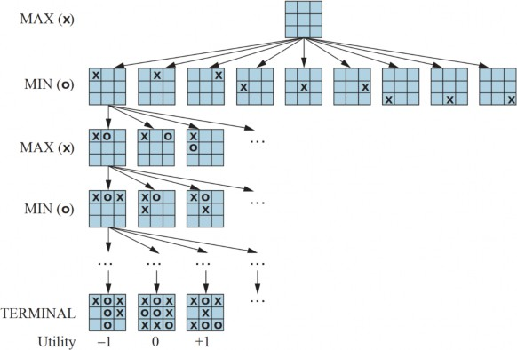
Hình 6.1 Một cây trò chơi (một phần) cho trò chơi tic-tac-toe. Nút trên cùng là trạng thái ban đầu và MAX đi trước, đặt một chữ X vào một ô trống. Chúng ta hiển thị một phần của cây, luân phiên các nước đi của MIN (O) và MAX (X), cho đến khi chúng ta cuối cùng đến các trạng thái kết thúc, có thể được gán các tiện ích theo các quy tắc của trò chơi.
Các Quyết định tối ưu trong trò chơi
MAX muốn tìm một chuỗi hành động dẫn đến chiến thắng, nhưng MIN có quyền can thiệp vào điều đó. Điều này có nghĩa là chiến lược của MAX phải là một kế hoạch có điều kiện—một chiến lược dự phòng chỉ định một phản hồi cho mỗi nước đi có thể có của MIN. Trong các trò chơi có kết quả nhị phân (thắng hoặc thua), chúng ta có thể sử dụng tìm kiếm AND-OR (trang 143) để tạo ra kế hoạch có điều kiện. Trên thực tế, đối với các trò chơi như vậy, định nghĩa của một chiến lược chiến thắng cho trò chơi giống hệt với định nghĩa của một giải pháp cho một bài toán lập kế hoạch không xác định: trong cả hai trường hợp, kết quả mong muốn phải được đảm bảo bất kể “phía bên kia” làm gì. Đối với các trò chơi có nhiều điểm kết quả, chúng ta cần một thuật toán tổng quát hơn một chút được gọi là tìm kiếm minimax.
Hãy xem xét trò chơi đơn giản trong Hình 6.2. Các nước đi có thể có của MAX tại nút gốc được gắn nhãn 𝑎1, 𝑎2 và 𝑎3 . Các phản hồi có thể có cho 𝑎1 của MIN là 𝑏1, 𝑏2, 𝑏3 , v.v. Trò chơi cụ thể này kết thúc sau mỗi một nước đi của MAX và MIN. (Lưu ý: Trong một số trò chơi, từ “nước đi” có nghĩa là cả hai người chơi đã thực hiện một hành động; do đó từ ply được sử dụng để chỉ rõ một cách rõ ràng một nước đi của một người chơi, đưa chúng ta xuống một cấp độ sâu hơn trong cây trò chơi.) Các tiện ích của các trạng thái kết thúc trong trò chơi này dao động từ 2 đến 14.
Với một cây trò chơi, chiến lược tối ưu có thể được xác định bằng cách tìm ra giá trị minimaxcủa mỗi trạng thái trong cây, mà chúng ta viết là 𝑀𝐼𝑁𝐼𝑀𝐴𝑋(𝑠) . Giá trị minimax là tiện ích (đối với MAX) của việc ở trong trạng thái đó, giả sử rằng cả hai người chơi đều chơi tối ưu từ đó cho đến cuối trò chơi. Giá trị minimax của một trạng thái kết thúc chỉ là tiện ích của nó. Trong một trạng thái không kết thúc, MAX thích di chuyển đến một trạng thái có giá trị tối đa khi đến lượt MAX di chuyển và MIN thích một trạng thái có giá trị tối thiểu (tức là giá trị tối thiểu cho MAX và do đó giá trị tối đa cho MIN). Vì vậy, chúng ta có:
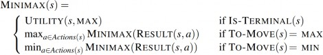
Hãy áp dụng các định nghĩa này cho cây trò chơi trong Hình 6.2. Các nút kết thúc ở cấp dưới cùng nhận giá trị tiện ích của chúng từ hàm UTILITY của trò chơi. Nút MIN đầu tiên, được gắn nhãn B, có ba trạng thái kế thừa với các giá trị 3, 12 và 8, vì vậy giá trị minimax của nó là 3. Tương tự, hai nút MIN khác có giá trị minimax là 2. Nút gốc là nút MAX; các trạng thái kế thừa của nó có giá trị minimax là 3, 2 và 2; vì vậy nó có giá trị minimax là 3. Chúng ta cũng có thể xác định quyếttại gốc: hành động 𝑎1 là lựa chọn tối ưu cho MAX vì nó dẫn đến trạng thái có giá trị minimax cao nhất.
Định nghĩa này về trò chơi tối ưu cho MAX giả định rằng MIN cũng chơi tối ưu. Điều gì xảy ra nếu MIN không chơi tối ưu? Khi đó MAX sẽ làm tốt ít nhất là như khi đối mặt với một người chơi tối ưu, có thể tốt hơn. Tuy nhiên, điều đó không có nghĩa là luôn luôn tốt nhất để chơi nước đi tối ưu minimax khi đối mặt với một đối thủ không tối ưu. Hãy xem xét một tình huống mà trò chơi tối ưu của cả hai bên sẽ dẫn đến một trận hòa, nhưng có một nước đi mạo hiểm cho MAX dẫn đến một trạng thái trong đó có 10 nước đi phản hồi khả thi của MIN mà tất cả đều có vẻ hợp lý, nhưng 9 trong số đó là một trận thua cho MIN và một là một trận thua cho MAX. Nếu MAX tin rằng MIN không có đủ sức mạnh tính toán để khám phá nước đi tối ưu, MAX có thể muốn thử nước đi mạo hiểm, với lý do rằng cơ hội 9/10 để chiến thắng tốt hơn một trận hòa chắc chắn.
Thuật toán tìm kiếm Minimax
Bây giờ chúng ta có thể tính toán 𝑀𝐼𝑁𝐼𝑀𝐴𝑋(𝑠) , chúng ta có thể biến nó thành một thuật toán tìm kiếm tìm ra nước đi tốt nhất cho MAX bằng cách thử tất cả các hành động và chọn hành động mà trạng thái kết quả có giá trị MINIMAX cao nhất. Hình 6.3 cho thấy thuật toán. Nó là một thuật toán đệ quy tiến hành xuống tận các nút lá của cây và sau đó sao lưu các giá trị minimax thông qua cây khi đệ quy kết thúc. Ví dụ, trong Hình 6.2, thuật toán đầu tiên đệ quy xuống ba nút dưới cùng bên trái và sử dụng hàm UTILITY trên chúng để khám phá rằng các giá trị của chúng lần
lượt là 3, 12 và 8. Sau đó, nó lấy giá trị tối thiểu của các giá trị này, 3, và trả về nó làm giá trị được sao lưu của nút B. Một quá trình tương tự cho các giá trị được sao lưu là 2 cho C và 2 cho D. Cuối cùng, chúng ta lấy giá trị tối đa của 3, 2 và 2 để có được giá trị được sao lưu là 3 cho nút gốc.
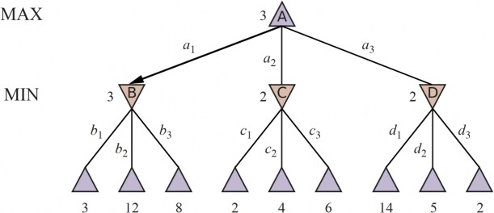
Hình 6.2 Một cây trò chơi hai ply. Các nút hình tam giác là “nút MAX”, trong đó đến lượt MAX di chuyển, và các nút hình vuông là “nút MIN”. Các nút kết thúc hiển thị các giá trị tiện ích cho MAX; các nút khác được gắn nhãn với các giá trị minimax của chúng. Nước đi tốt nhất của MAX tại gốc là 𝑎1 , vì nó dẫn đến trạng thái có giá trị minimax cao nhất, và phản hồi tốt nhất của MIN là 𝑏1 , vì nó dẫn đến trạng thái có giá trị minimax thấp nhất.
function MINIMAX-SEARCH(game, state) returns an action
player ← game.TO-MOVE(state)
value, move ← MAX-VALUE(game, state) return move
function MAX-VALUE(game, state) returns a (utility, move) pair
if game.IS-TERMINAL(state) then return game.UTILITY(state, player), null
v, move ← -∞
for each a in game.ACTIONS(state) do
v2, a2 ← MIN-VALUE(game, game.RESULT(state, a)) if v2 > v then
v, move ← v2, a
return v, move
function MIN-VALUE(game, state) returns a (utility, move) pair
if game.IS-TERMINAL(state) then return game.UTILITY(state, player), null
v, move ← +∞
for each a in game.ACTIONS(state) do
v2, a2 ← MAX-VALUE(game, game.RESULT(state, a))
if v2 < v then
v, move ← v2, a
return v, move
Thuật toán minimax thực hiện một khám phá độ sâu đầu tiên hoàn chỉnh của cây trò chơi. Nếu độ sâu tối đa của cây là 𝑚 và có 𝑏 nước đi hợp lệ tại mỗi điểm, thì độ phức tạp thời gian của thuật toán minimax là 𝑂(𝑏𝑚) . Độ phức tạp không gian là 𝑂(𝑏𝑚) đối với một thuật toán tạo tất cả các hành động cùng một lúc, hoặc 𝑂(𝑚) đối với một thuật toán tạo các hành động từng cái một (xem trang 98). Độ phức tạp theo cấp số nhân làm cho MINIMAX không thực tế đối với các trò chơi phức tạp; ví dụ, cờ vua có hệ số phân nhánh khoảng 35 và trò chơi trung bình có độ sâu khoảng 80 ply, và không thể tìm kiếm 3580 ≈ 10123 trạng thái. Tuy nhiên, MINIMAX đóng vai trò là cơ sở cho việc phân tích toán học các trò chơi. Bằng cách xấp xỉ phân tích minimax theo nhiều cách khác nhau, chúng ta có thể suy ra các thuật toán thực tế hơn.
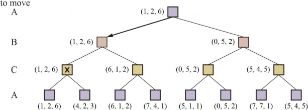
Quyết định tối ưu trong các trò chơi nhiều người chơi
Nhiều trò chơi phổ biến cho phép nhiều hơn hai người chơi. Chúng ta hãy xem xét cách mở rộng ý tưởng minimax cho các trò chơi nhiều người chơi. Điều này khá đơn giản từ quan điểm kỹ thuật, nhưng đặt ra một số vấn đề khái niệm mới thú vị.
Đầu tiên, chúng ta cần thay thế giá trị đơn cho mỗi nút bằng một vector giá trị. Ví dụ, trong một trò chơi ba người chơi với người chơi A, B và C, một vector $\left⟨v_{A},v_{B},v_{C}\right⟩$ được liên kết với mỗi nút. Đối với các trạng thái kết thúc, vector này đưa ra tiện ích của trạng thái từ quan điểm của mỗi người chơi. (Trong các trò chơi hai người chơi, tổng bằng không, vector hai
phần tử có thể được giảm xuống thành một giá trị duy nhất vì các giá trị luôn ngược nhau.) Cách
đơn giản nhất để thực hiện điều này là yêu cầu hàm UTILITY trả về một vector tiện ích.
Bây giờ chúng ta phải xem xét các trạng thái không kết thúc. Hãy xem xét nút được đánh dấu X trong cây trò chơi được hiển thị trong Hình 6.4. Trong trạng thái đó, người chơi C chọn làm gì. Hai lựa chọn dẫn đến các trạng thái kết thúc với các vector tiện ích là ⟨𝑣𝐴 = 1, 𝑣𝐵 = 2, 𝑣𝐶 = 6⟩ và
⟨𝑣𝐴 = 4, 𝑣𝐵 = 2, 𝑣𝐶 = 3⟩ . Vì 6 lớn hơn 3, C nên chọn nước đi đầu tiên. Điều này có nghĩa là nếu trạng thái X đạt được, trò chơi tiếp theo sẽ dẫn đến một trạng thái kết thúc với tiện ích là
⟨𝑣𝐴 = 1, 𝑣𝐵 = 2, 𝑣𝐶 = 6⟩ . Do đó, giá trị được sao lưu của X là vector này. Nói chung, giá trị được sao lưu của một nút 𝑛 là vector tiện ích của trạng thái kế thừa có giá trị cao nhất đối với người chơi lựa chọn tại 𝑛 .
Bất cứ ai chơi các trò chơi nhiều người chơi, chẳng hạn như Diplomacy hoặc Settlers of Catan, đều nhanh chóng nhận ra rằng có nhiều điều đang diễn ra hơn trong các trò chơi hai người chơi. Các trò chơi nhiều người chơi thường liên quan đến các liên minh, dù chính thức hay không chính thức, giữa các người chơi. Các liên minh được tạo ra và phá vỡ khi trò chơi tiếp diễn. Làm thế nào để chúng ta hiểu được hành vi như vậy? Liệu các liên minh có phải là một hệ quả tự nhiên của các chiến lược tối ưu cho mỗi người chơi trong một trò chơi nhiều người chơi không? Hóa ra là chúng có thể.
Ví dụ, giả sử A và B ở vị trí yếu và C ở vị trí mạnh hơn. Khi đó, thường là tối ưu cho cả A và B để tấn công C thay vì tấn công lẫn nhau, để C không tiêu diệt từng người trong số họ một. Bằng cách này, sự hợp tác nảy sinh từ hành vi hoàn toàn ích kỷ. Tất nhiên, ngay sau khi C suy yếu dưới đòn tấn công chung, liên minh sẽ mất giá trị, và một trong hai A hoặc B có thể vi phạm thỏa thuận.
Trong một số trường hợp, các liên minh rõ ràng chỉ làm cụ thể hóa những gì đã xảy ra. Trong các trường hợp khác, một sự kỳ thị xã hội gắn liền với việc phá vỡ một liên minh, vì vậy người chơi phải cân bằng lợi thế trước mắt của việc phá vỡ một liên minh với bất lợi lâu dài của việc bị coi là không đáng tin cậy. Xem Mục 17.2 để biết thêm về những phức tạp này.
Nếu trò chơi không phải là tổng bằng không, thì sự hợp tác cũng có thể xảy ra chỉ với hai người chơi. Giả sử, ví dụ, có một trạng thái kết thúc với tiện ích là ⟨𝑣𝐴 = 1000, 𝑣𝐵 = 1000⟩ và 1000 là tiện ích cao nhất có thể cho mỗi người chơi. Khi đó, chiến lược tối ưu là cả hai người chơi đều làm mọi thứ có thể để đạt được trạng thái này—nghĩa là, người chơi sẽ tự động hợp tác để đạt được một mục tiêu cùng mong muốn.
Cắt tỉa Alpha-Beta
Số lượng trạng thái trò chơi là hàm mũ theo độ sâu của cây. Không có thuật toán nào có thể loại bỏ hoàn toàn số mũ, nhưng đôi khi chúng ta có thể cắt nó làm đôi, tính toán quyết định minimax đúng mà không cần kiểm tra mọi trạng thái bằng cách cắt tỉa (xem trang 108) các phần lớn của cây không tạo ra sự khác biệt cho kết quả. Kỹ thuật cụ thể mà chúng ta xem xét được gọi là cắt tỉa.
Hãy xem xét lại cây trò chơi hai ply từ Hình 6.2. Chúng ta hãy xem lại việc tính toán quyết định tối ưu một lần nữa, lần này chú ý cẩn thận đến những gì chúng ta biết tại mỗi điểm trong quá trình.
Các bước được giải thích trong Hình 6.5. Kết quả là chúng ta có thể xác định quyết định minimax mà không cần phải đánh giá hai trong số các nút lá.
Một cách khác để xem xét điều này là một sự đơn giản hóa của công thức cho MINIMAX. Hãy để hai trạng thái kế thừa chưa được đánh giá của nút C trong Hình 6.5 có các giá trị 𝑥 và 𝑦 . Khi đó, giá trị của nút gốc được cho bởi
𝑀𝐼𝑁𝐼𝑀𝐴𝑋(𝑟𝑜𝑜𝑡) = max(min(3,12,8), min(2, 𝑥, 𝑦), min(14,5,2))
= max(3, min(2, 𝑥, 𝑦), 2)
= max(3, 𝑧, 2) 𝑡𝑟𝑜𝑛𝑔 đó 𝑧 = min(2, 𝑥, 𝑦) ≤ 2
= 3.
Nói cách khác, giá trị của nút gốc và do đó quyết định minimax là độc lập với các giá trị của các nút lá 𝑥 và 𝑦 , và do đó chúng có thể được cắt tỉa.
Cắt tỉa Alpha-beta có thể được áp dụng cho các cây có bất kỳ độ sâu nào, và thường có thể cắt tỉa toàn bộ cây con thay vì chỉ các nút lá. Nguyên tắc chung là: hãy xem xét một nút 𝑛 ở đâu đó trong cây (xem Hình 6.6), sao cho Người chơi có lựa chọn di chuyển đến 𝑛 . Nếu Người chơi có một lựa chọn tốt hơn ở cùng cấp độ (ví dụ: 𝑚′ trong Hình 6.6) hoặc ở bất kỳ điểm nào cao hơn trong cây (ví dụ: 𝑚 trong Hình 6.6), thì Người chơi sẽ không bao giờ di chuyển đến 𝑛 . Vì vậy, một khi chúng ta đã tìm ra đủ về 𝑛 (bằng cách kiểm tra một số hậu duệ của nó) để đi đến kết luận này, chúng ta có thể cắt tỉa nó.
Hãy nhớ rằng tìm kiếm minimax là độ sâu đầu tiên, vì vậy tại bất kỳ thời điểm nào chúng ta chỉ cần xem xét các nút dọc theo một đường dẫn duy nhất trong cây. Cắt tỉa alpha-beta có tên của nó từ hai tham số bổ sung trong MAX-VALUE(state, α, β) (xem Hình 6.7) mô tả các giới hạn trên các giá trị được sao lưu xuất hiện ở bất cứ đâu dọc theo đường dẫn:
𝛼 = giá trị của lựa chọn tốt nhất (tức là giá trị cao nhất) mà chúng ta đã tìm thấy cho đến nay tại bất kỳ điểm lựa chọn nào dọc theo đường dẫn cho MAX. Hãy nghĩ: 𝛼 = “ít nhất là”.
𝛽 = giá trị của lựa chọn tốt nhất (tức là giá trị thấp nhất) mà chúng ta đã tìm thấy cho đến nay tại bất kỳ điểm lựa chọn nào dọc theo đường dẫn cho MIN. Hãy nghĩ: 𝛽 = “nhiều nhất là”.
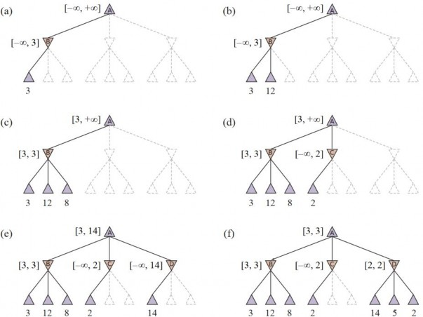
Thuật toán tìm kiếm alpha-beta cập nhật các giá trị của 𝛼 và 𝛽 khi nó tiếp tục và cắt tỉa các nhánh còn lại tại một nút (tức là, chấm dứt lời gọi đệ quy) ngay khi giá trị của nút hiện tại được biết là tệ
hơn giá trị 𝛼 hoặc 𝛽 hiện tại tương ứng cho MAX hoặc MIN. Thuật toán hoàn chỉnh được đưa ra
trong Hình 6.7. Hình 6.5 theo dõi tiến trình của thuật toán trên một cây trò chơi.
Sắp xếp nước đi
Hiệu quả của việc cắt tỉa alpha-beta phụ thuộc rất nhiều vào thứ tự các trạng thái được kiểm tra. Ví dụ, trong Hình 6.5(e) và (f), chúng ta không thể cắt tỉa bất kỳ trạng thái kế thừa nào của D cả vì các trạng thái kế thừa tệ nhất (từ quan điểm của MIN) đã được tạo ra đầu tiên. Nếu trạng thái kế thừa thứ ba của D được tạo ra trước, với giá trị là 2, chúng ta đã có thể cắt tỉa hai trạng thái kế thừa còn lại. Điều này cho thấy rằng có thể đáng để thử kiểm tra trước các trạng thái kế thừa có khả năng tốt nhất.
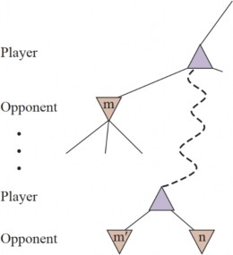
Hình 6.6 Trường hợp tổng quát cho việc cắt tỉa alpha-beta. Nếu 𝑚 hoặc 𝑚′ tốt hơn 𝑛 cho Người chơi, chúng ta sẽ không bao giờ đến được 𝑛 trong trò chơi.
Nếu điều này có thể được thực hiện một cách hoàn hảo, alpha-beta sẽ chỉ cần kiểm tra 𝑂(𝑏𝑚/2) nút để chọn nước đi tốt nhất, thay vì 𝑂(𝑏𝑚) đối với minimax. Điều này có nghĩa là hệ số phân nhánh hiệu quả trở thành 𝑠𝑞𝑟𝑡𝑏 thay vì 𝑏 —đối với cờ vua, khoảng 6 thay vì 35. Nói cách khác, alpha-beta với sắp xếp nước đi hoàn hảo có thể giải một cây sâu gấp đôi so với minimax trong cùng một khoảng thời gian. Với sắp xếp nước đi ngẫu nhiên, tổng số nút được kiểm tra sẽ xấp xỉ
𝑂(𝑏3𝑚/4) đối với 𝑏 vừa phải. Rõ ràng, chúng ta không thể đạt được sắp xếp nước đi hoàn hảo— trong trường hợp đó, hàm sắp xếp có thể được sử dụng để chơi một trò chơi hoàn hảo! Nhưng chúng ta thường có thể tiến khá gần. Đối với cờ vua, một hàm sắp xếp khá đơn giản (chẳng hạn như thử các nước đi bắt quân trước, sau đó là các mối đe dọa, sau đó là các nước đi về phía trước và sau đó là các nước đi lùi) sẽ đưa bạn đến gần với kết quả 𝑂(𝑏𝑚/2) tốt nhất trong khoảng một hệ số 2.
Việc thêm các lược đồ sắp xếp nước đi động, chẳng hạn như thử trước các nước đi được tìm thấy là tốt nhất trong quá khứ, đưa chúng ta đến khá gần giới hạn lý thuyết. Quá khứ có thể là nước đi trước—thường thì các mối đe dọa tương tự vẫn còn—hoặc nó có thể đến từ việc khám phá trước đó của nước đi hiện tại thông qua một quá trình làm sâu dần (xem trang 98). Đầu tiên, tìm kiếm
sâu một ply và ghi lại thứ hạng của các nước đi dựa trên đánh giá của chúng. Sau đó tìm kiếm sâu hơn một ply, sử dụng thứ hạng trước đó để thông báo việc sắp xếp nước đi; và cứ như vậy. Thời gian tìm kiếm tăng lên từ việc làm sâu dần có thể được bù đắp nhiều hơn từ việc sắp xếp nước đi tốt hơn. Các nước đi tốt nhất được gọi là nước đi sát thủ, và việc thử chúng trước được gọi là heuristic nước đi sát thủ.
Trong Mục 3.3.3, chúng ta đã lưu ý rằng các đường dẫn dư thừa đến các trạng thái lặp lại có thể gây ra sự gia tăng theo cấp số nhân trong chi phí tìm kiếm, và việc giữ một bảng các trạng thái đã đạt được trước đó có thể giải quyết vấn đề này. Trong tìm kiếm cây trò chơi, các trạng thái lặp lại có thể xảy ra do hoán vị—các hoán vị khác nhau của chuỗi nước đi kết thúc ở cùng một vị trí, và vấn đề có thể được giải quyết bằng một bảng hoán vị lưu trữ giá trị heuristic của các trạng thái.
function ALPHA-BETA-SEARCH(game, state) returns an action
player ← game.TO-MOVE(state)
value, move ← MAX-VALUE(game, state, -∞, +∞)
return move
function MAX-VALUE(game, state, α, β) returns a (utility, move) pair
if game.IS-TERMINAL(state) then return game.UTILITY(state, player), null
v, move ← -∞
for each a in game.ACTIONS(state) do
v2, a2 ← MIN-VALUE(game, game.RESULT(state, a), α, β)
if v2 > v then
v, move ← v2, a α ← MAX(α, v)
if v ≥ β then return v, move
return v, move
function MIN-VALUE(game, state, α, β) returns a (utility, move) pair
if game.IS-TERMINAL(state) then return game.UTILITY(state, player), null
v, move ← +∞
for each a in game.ACTIONS(state) do
v2, a2 ← MAX-VALUE(game, game.RESULT(state, a), α, β)
if v2 < v then
v, move ← v2, a β ← MIN(β, v)
if v ≤ α then return v, move
return v, move
Hình 6.7 Thuật toán tìm kiếm alpha-beta. Lưu ý rằng các hàm này giống với các hàm MINIMAX- SEARCH trong Hình 6.3, ngoại trừ việc chúng ta duy trì các giới hạn trong các biến 𝑎𝑙𝑝ℎ𝑎 và
𝑏𝑒𝑡𝑎 , và sử dụng chúng để cắt bớt tìm kiếm khi một giá trị nằm ngoài các giới hạn.
Ví dụ, giả sử Trắng có một nước đi 𝑤1 có thể được Đen trả lời bằng 𝑏1 và một nước đi không liên quan 𝑤2 ở phía bên kia của bàn cờ có thể được trả lời bằng 𝑏2 , và chúng ta tìm kiếm chuỗi nước đi [𝑤1, 𝑏1, 𝑤2, 𝑏2] ; hãy gọi trạng thái kết quả là 𝑠 . Sau khi khám phá một cây con lớn bên dưới 𝑠
, chúng ta tìm thấy giá trị được sao lưu của nó, mà chúng ta lưu trữ trong bảng hoán vị. Khi chúng
ta sau đó tìm kiếm chuỗi nước đi [𝑤2, 𝑏2, 𝑤1, 𝑏1] , chúng ta lại kết thúc ở trạng thái 𝑠 , và chúng ta có thể tra cứu giá trị thay vì lặp lại việc tìm kiếm. Trong cờ vua, việc sử dụng các bảng hoán vị rất hiệu quả, cho phép chúng ta tăng gấp đôi độ sâu tìm kiếm có thể đạt được trong cùng một khoảng thời gian.
Ngay cả với cắt tỉa alpha-beta và sắp xếp nước đi thông minh, minimax sẽ không hoạt động cho các trò chơi như cờ vua và cờ vây, bởi vì vẫn còn quá nhiều trạng thái để khám phá trong thời gian có sẵn. Trong bài báo đầu tiên về việc chơi trò chơi trên máy tính, Lập trình máy tính để chơi cờ(Shannon, 1950), Claude Shannon đã nhận ra vấn đề này và đề xuất hai chiến lược: một chiếnxem xét tất cả các nước đi có thể có đến một độ sâu nhất định trong cây tìm kiếm, và sau đó sử dụng một hàm đánh giá heuristic để ước tính tiện ích của các trạng thái ở độ sâu đó. Nó khám phá một phần rộng nhưng nông của cây. Một chiến lược Loại B bỏ qua các nước đi có vẻ tệ, và đi theo các đường đi đầy hứa hẹn “càng xa càng tốt”. Nó khám phá một phần sâu nhưng hẹp của cây. Trong lịch sử, hầu hết các chương trình cờ vua là Loại A (chúng ta sẽ đề cập trong mục tiếp theo), trong khi các chương trình cờ vây thường là Loại B (được đề cập trong Mục 6.4), bởi vì hệ số phân nhánh trong cờ vây cao hơn nhiều. Gần đây hơn, các chương trình Loại B đã thể hiện khả năng chơi ở cấp độ vô địch thế giới trên nhiều trò chơi khác nhau, bao gồm cả cờ vua (Silver và cộng sự, 2018).
Tìm kiếm cây Alpha-Beta Heuristic
Để tận dụng thời gian tính toán có hạn, chúng ta có thể cắt bớt tìm kiếm sớm và áp dụng một hàmcho các trạng thái, coi các nút không kết thúc như thể chúng là các nút kết thúc. Nói cách khác, chúng ta thay thế hàm UTILITY bằng EVAL, ước tính tiện ích của một trạng thái. Chúng ta cũng thay thế kiểm tra kết thúc bằng một kiểm tra cắt bớt, phải trả về true cho các trạng thái kết thúc, nhưng nếu không thì có thể tự do quyết định khi nào cắt bớt tìm kiếm, dựa trên độ sâu tìm kiếm và bất kỳ thuộc tính nào của trạng thái mà nó chọn để xem xét. Điều đó cho chúng ta công thức H-MINIMAX( 𝑠, 𝑑 ) cho giá trị minimax heuristic của trạng thái 𝑠 ở độ sâu tìm kiếm
𝑑 :
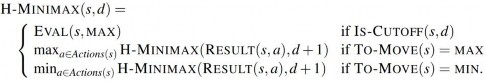
Các hàm đánh giá
𝑠 đối với người chơi 𝑝 , giống như các hàm heuristic của Chương 3 trả về một ước tính về khoảng cách đến mục tiêu. Đối với các trạng thái kết thúc, phải là 𝐸𝑉𝐴𝐿(𝑠, 𝑝) = 𝑈𝑇𝐼𝐿𝐼𝑇𝑌(𝑠, 𝑝) và đối với các trạng thái không kết thúc, đánh giá phải nằm ở đâu đó giữa thua và thắng:
𝑈𝑇𝐼𝐿𝐼𝑇𝑌(𝑡ℎ𝑢𝑎, 𝑝) ≤ 𝐸𝑉𝐴𝐿(𝑠, 𝑝) ≤ 𝑈𝑇𝐼𝐿𝐼𝑇𝑌(𝑡ℎắ𝑛𝑔, 𝑝) .
Ngoài những yêu cầu đó, điều gì tạo nên một hàm đánh giá tốt? Thứ nhất, việc tính toán không được mất quá nhiều thời gian! (Toàn bộ vấn đề là để tìm kiếm nhanh hơn.) Thứ hai, hàm đánh giá phải tương quan mạnh mẽ với cơ hội chiến thắng thực tế. Người ta có thể tự hỏi về cụm từ “cơ hội chiến thắng”. Rốt cuộc, cờ vua không phải là một trò chơi may rủi: chúng ta biết trạng thái hiện tại một cách chắc chắn, và không có xúc xắc nào liên quan; nếu không người chơi nào mắc lỗi, kết
quả đã được định trước. Nhưng nếu việc tìm kiếm phải bị cắt bớt ở các trạng thái không kết thúc, thì thuật toán nhất thiết sẽ không chắc chắn về kết quả cuối cùng của các trạng thái đó (mặc dù sự không chắc chắn đó có thể được giải quyết bằng các tài nguyên tính toán vô hạn).
Chúng ta hãy làm cho ý tưởng này cụ thể hơn. Hầu hết các hàm đánh giá hoạt động bằng cách tính toán các đặc điểm khác nhau của trạng thái—ví dụ, trong cờ vua, chúng ta sẽ có các đặc điểm cho số lượng quân tốt trắng, quân tốt đen, quân hậu trắng, quân hậu đen, v.v. Các đặc điểm, khi được tổng hợp lại, xác định các loại hoặc lớp tương đương khác nhau của các trạng thái: các trạng thái trong mỗi loại có cùng giá trị cho tất cả các đặc điểm. Ví dụ, một loại có thể chứa tất cả các trận đấu cuối cùng hai tốt đấu một tốt. Bất kỳ loại nào cũng sẽ chứa một số trạng thái dẫn đến chiến thắng (với lối chơi hoàn hảo), một số dẫn đến hòa, và một số dẫn đến thua.
Hàm đánh giá không biết trạng thái nào là gì, nhưng nó có thể trả về một giá trị duy nhất ước tính tỷ lệ các trạng thái với mỗi kết quả. Ví dụ, giả sử kinh nghiệm của chúng ta cho thấy rằng 82% các trạng thái gặp phải trong loại hai tốt đấu một tốt dẫn đến chiến thắng (tiện ích +1); 2% dẫn đến thua (0), và 16% dẫn đến hòa (1/2). Khi đó, một đánh giá hợp lý cho các trạng thái trong loại này là giá trị kỳ vọng: (0.82 × 1) + (0.02 × 0) + (0.16 × 1/2) = 0.90 . Về nguyên tắc, giá trị kỳ vọng có thể được xác định cho mỗi loại trạng thái, dẫn đến một hàm đánh giá hoạt động cho bất kỳ trạng thái nào.
Trong thực tế, loại phân tích này yêu cầu quá nhiều loại và do đó quá nhiều kinh nghiệm để ước tính tất cả các xác suất. Thay vào đó, hầu hết các hàm đánh giá tính toán các đóng góp số riêng biệt từ mỗi đặc điểm và sau đó kết hợp chúng để tìm ra tổng giá trị.
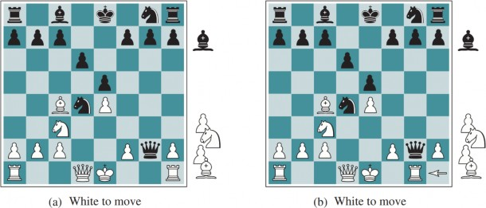
Trong nhiều thế kỷ, người chơi cờ vua đã phát triển các cách đánh giá giá trị của một vị trí chỉ bằng ý tưởng này. Ví dụ, các sách cờ vua nhập môn đưa ra một giá trị vật chất gần đúng cho mỗi quân cờ: mỗi quân tốt trị giá 1, một mã hoặc tượng trị giá 3, một xe 5, và quân hậu 9. Các đặc điểm
khác như “cấu trúc tốt đẹp” và “an toàn vua” có thể trị giá nửa tốt, chẳng hạn. Các giá trị đặc điểm này sau đó chỉ đơn giản là được cộng lại để có được đánh giá của vị trí.
Về mặt toán học, loại hàm đánh giá này được gọi là hàm tuyến tính có trọng số vì nó có thể được biểu thị là:
𝑛
𝐸𝑉𝐴𝐿(𝑠) = 𝑤1𝑓1(𝑠) + 𝑤2𝑓2(𝑠) + ⋯ + 𝑤𝑛𝑓𝑛(𝑠) = ∑ 𝑤𝑖 𝑓𝑖(𝑠)
𝑖=1
trong đó mỗi 𝑓𝑖 là một đặc điểm của vị trí (chẳng hạn như “số lượng tượng trắng”) và mỗi 𝑤𝑖 là một trọng số (nói lên đặc điểm đó quan trọng như thế nào). Các trọng số nên được chuẩn hóa sao cho tổng luôn nằm trong khoảng từ thua (0) đến thắng (+1). Một lợi thế an toàn tương đương với một quân tốt mang lại một khả năng đáng kể để chiến thắng, và một lợi thế an toàn tương đương với ba quân tốt sẽ mang lại chiến thắng gần như chắc chắn, như được minh họa trong Hình 6.8(a). Chúng ta đã nói rằng hàm đánh giá nên tương quan mạnh mẽ với cơ hội chiến thắng thực tế, nhưng nó không cần phải tương quan tuyến tính: nếu trạng thái 𝑠 có khả năng chiến thắng gấp đôi trạng thái 𝑠′ , chúng ta không yêu cầu rằng 𝐸𝑉𝐴𝐿(𝑠) phải gấp đôi 𝐸𝑉𝐴𝐿(𝑠′) ; tất cả những gì chúng ta yêu cầu là 𝐸𝑉𝐴𝐿(𝑠) > 𝐸𝑉𝐴𝐿(𝑠′) .
Việc cộng các giá trị của các đặc điểm dường như là một điều hợp lý để làm, nhưng trên thực tế nó liên quan đến một giả định mạnh mẽ: rằng sự đóng góp của mỗi đặc điểm là độc lập với các giá trị của các đặc điểm khác. Vì lý do này, các chương trình hiện tại cho cờ vua và các trò chơi khác cũng sử dụng các kết hợp phi tuyến tính của các đặc điểm. Ví dụ, một cặp tượng có thể trị giá hơn gấp đôi giá trị của một tượng đơn lẻ, và một tượng có giá trị hơn trong giai đoạn cuối trận so với trước đó—khi đặc điểm số nước đi cao hoặc đặc điểm số quân cờ còn lại thấp.
Các đặc điểm và trọng số đến từ đâu? Chúng không phải là một phần của luật cờ vua, nhưng chúng là một phần của văn hóa kinh nghiệm chơi cờ vua của con người. Trong các trò chơi mà loại kinh nghiệm này không có sẵn, trọng số của hàm đánh giá có thể được ước tính bằng các kỹ thuật họccủa Chương 23. Áp dụng các kỹ thuật này cho cờ vua đã xác nhận rằng một tượng thực sự trị giá khoảng ba quân tốt, và có vẻ như hàng thế kỷ kinh nghiệm của con người có thể được tái tạo chỉ trong vài giờ học máy.
Cắt bớt tìm kiếm
Bước tiếp theo là sửa đổi ALPHA-BETA-SEARCH để nó sẽ gọi hàm heuristic EVAL khi thích hợp để cắt bớt tìm kiếm. Chúng ta thay thế hai dòng trong Hình 6.7 đề cập đến IS-TERMINALbằng dòng sau:
if game.IS-CUTOFF(state, depth) then return game.EVAL(state, player), null
Chúng ta cũng phải sắp xếp một số thủ tục để độ sâu hiện tại được tăng lên trong mỗi lần gọi đệ quy. Cách tiếp cận đơn giản nhất để kiểm soát lượng tìm kiếm là đặt một giới hạn độ sâu cố định sao cho IS-CUTOFF(state, depth) trả về true cho tất cả độ sâu lớn hơn một độ sâu cố định 𝑑 nào đó (cũng như cho tất cả các trạng thái kết thúc). Độ sâu 𝑑 được chọn sao cho một nước đi được chọn trong thời gian được phân bổ. Một cách tiếp cận mạnh mẽ hơn là áp dụng làm sâu dần. (Xem Chương 3.) Khi hết thời gian, chương trình trả về nước đi được chọn bởi tìm kiếm hoàn thành sâu nhất. Như một phần thưởng, nếu trong mỗi vòng làm sâu dần, chúng ta giữ các mục trong bảng
hoán vị, các vòng tiếp theo sẽ nhanh hơn và chúng ta có thể sử dụng các đánh giá để cải thiện việc sắp xếp nước đi.
Các cách tiếp cận đơn giản này có thể dẫn đến lỗi do bản chất xấp xỉ của hàm đánh giá. Hãy xem xét lại hàm đánh giá đơn giản cho cờ vua dựa trên lợi thế vật chất. Giả sử chương trình tìm kiếm đến giới hạn độ sâu, đạt đến vị trí trong Hình 6.8(b), nơi Đen dẫn trước một mã và hai tốt. Nó sẽ báo cáo đây là giá trị heuristic của trạng thái, do đó tuyên bố rằng trạng thái này là một chiến thắng có khả năng của Đen. Nhưng nước đi tiếp theo của Trắng bắt hậu của Đen mà không có sự đền bù nào. Do đó, vị trí thực sự thuận lợi cho Trắng, nhưng điều này chỉ có thể được nhìn thấy bằng cách nhìn xa hơn.
Hàm đánh giá chỉ nên được áp dụng cho các vị trí quiescent—tức là, các vị trí mà không có nước đi đang chờ xử lý (chẳng hạn như một nước bắt hậu) có thể làm thay đổi đáng kể đánh giá. Đối với các vị trí không quiescent, IS-CUTOFF trả về false, và tìm kiếm tiếp tục cho đến khi các vị trí quiescent đạt được. Việc tìm kiếm quiescent bổ sung này đôi khi bị giới hạn chỉ xem xét một số loại nước đi nhất định, chẳng hạn như nước đi bắt quân, sẽ nhanh chóng giải quyết sự không chắc chắn trong vị trí.
6.9. Rõ ràng là không có cách nào để tượng đen thoát ra. Ví dụ, xe trắng có thể bắt nó bằng cách di chuyển đến h1, sau đó a1, sau đó a2; một nước bắt ở độ sâu 6 ply.
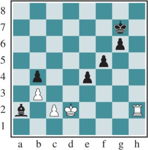
Nhưng Đen có một chuỗi nước đi đẩy việc bắt tượng “qua chân trời”. Giả sử Đen tìm kiếm đến độ sâu 8 ply. Hầu hết các nước đi của Đen sẽ dẫn đến việc bắt tượng cuối cùng, và do đó sẽ được đánh dấu là nước đi “xấu”. Nhưng Đen cũng sẽ xem xét chuỗi nước đi bắt đầu bằng việc chiếu vua bằng một quân tốt, và dụ vua bắt tốt đó. Sau đó, Đen có thể làm điều tương tự với quân tốt thứ hai. Điều đó chiếm đủ nước đi mà việc bắt tượng sẽ không được khám phá trong phần còn lại của tìm kiếm của Đen. Đen nghĩ rằng đường đi này đã cứu tượng với cái giá của hai quân tốt, trong khi thực tế tất cả những gì nó đã làm là lãng phí tốt và đẩy việc bắt tượng không thể tránh khỏi ra ngoài chân trời mà Đen có thể nhìn thấy.
Một chiến lược để giảm thiểu hiệu ứng chân trời là cho phép mở rộng đơn lẻ, các nước đi “rõ ràng tốt hơn” tất cả các nước đi khác trong một vị trí nhất định, ngay cả khi việc tìm kiếm thường sẽ bị cắt bớt tại thời điểm đó. Trong ví dụ của chúng ta, một tìm kiếm sẽ tiết lộ rằng ba nước đi của xe trắng—h2 đến h1, sau đó h1 đến a1, và sau đó a1 bắt tượng trên a2—lần lượt là những nước đi rõ ràng tốt hơn, vì vậy ngay cả khi một chuỗi nước đi tốt đẩy chúng ta đến chân trời, những nước đi rõ ràng tốt hơn này sẽ được trao cơ hội để mở rộng tìm kiếm. Điều này làm cho cây sâu hơn, nhưng vì thường có ít mở rộng đơn lẻ, chiến lược này không thêm nhiều nút tổng thể vào cây và đã được chứng minh là hiệu quả trong thực tế.
Cắt tỉa về phía trước
Cắt tỉa alpha-beta cắt tỉa các nhánh của cây không thể có ảnh hưởng đến đánh giá cuối cùng, nhưng cắt tỉa về phía trước cắt tỉa các nước đi có vẻ là nước đi kém, nhưng có thể là nước đi tốt. Do đó, chiến lược này tiết kiệm thời gian tính toán với rủi ro mắc lỗi. Theo thuật ngữ của Shannon, đây là một chiến lược Loại B. Rõ ràng, hầu hết người chơi cờ vua đều làm điều này, chỉ xem xét một vài nước đi từ mỗi vị trí (ít nhất là một cách có ý thức).
Một cách tiếp cận để cắt tỉa về phía trước là tìm kiếm chùm (xem trang 133): trên mỗi ply, chỉ xem xét một “chùm” 𝑛 nước đi tốt nhất (theo hàm đánh giá) thay vì xem xét tất cả các nước đi có thể có. Thật không may, cách tiếp cận này khá nguy hiểm vì không có gì đảm bảo rằng nước đi tốt nhất sẽ không bị cắt tỉa.
Thuật toán PROBCUT, hay cắt tỉa xác suất (Buro, 1995), là một phiên bản cắt tỉa về phía trước của tìm kiếm alpha-beta sử dụng số liệu thống kê thu được từ kinh nghiệm trước đó để giảm bớt cơ hội nước đi tốt nhất sẽ bị cắt tỉa. Tìm kiếm alpha-beta cắt tỉa bất kỳ nút nào được chứng minh là nằm ngoài cửa sổ (𝛼, 𝛽) hiện tại. PROBCUT cũng cắt tỉa các nút có khả năng nằm ngoài cửa sổ. Nó tính toán xác suất này bằng cách thực hiện một tìm kiếm nông để tính toán giá trị được sao lưu 𝑣 của một nút và sau đó sử dụng kinh nghiệm trong quá khứ để ước tính khả năng một điểm số 𝑣 ở độ sâu 𝑑 trong cây sẽ nằm ngoài (𝛼, 𝛽) là bao nhiêu. Buro đã áp dụng kỹ thuật này cho chương trình Othello của mình, LOGISTELLO, và thấy rằng một phiên bản của chương trình của anh ấy với PROBCUT đã đánh bại phiên bản thông thường 64% thời gian, ngay cả khi phiên bản thông thường được cho gấp đôi thời gian.
Một kỹ thuật khác, giảm nước đi muộn, hoạt động dưới giả định rằng việc sắp xếp nước đi đã được thực hiện tốt, và do đó các nước đi xuất hiện muộn hơn trong danh sách các nước đi có thể có ít có khả năng là nước đi tốt. Nhưng thay vì cắt tỉa chúng hoàn toàn, chúng ta chỉ giảm độ sâu mà chúng ta tìm kiếm các nước đi này, do đó tiết kiệm thời gian. Nếu tìm kiếm giảm bớt trả về một giá trị trên giá trị 𝛼 hiện tại, chúng ta có thể chạy lại tìm kiếm với độ sâu đầy đủ.
Kết hợp tất cả các kỹ thuật được mô tả ở đây dẫn đến một chương trình có thể chơi cờ vua (hoặc các trò chơi khác) một cách đáng tin cậy. Hãy giả sử chúng ta đã triển khai một hàm đánh giá cho cờ vua, một kiểm tra cắt bớt hợp lý với tìm kiếm quiescent. Hãy cũng giả sử rằng, sau nhiều tháng lập trình tẻ nhạt, chúng ta có thể tạo và đánh giá khoảng một triệu nút mỗi giây trên một PC mới nhất. Hệ số phân nhánh cho cờ vua là khoảng 35, trung bình, và 355 là khoảng 50 triệu, vì vậy nếu chúng ta sử dụng tìm kiếm minimax, chúng ta chỉ có thể nhìn trước năm ply trong khoảng một phút tính toán; các quy tắc cạnh tranh sẽ không cho chúng ta đủ thời gian để tìm kiếm sáu ply. Mặc dù không kém cỏi, một chương trình như vậy có thể bị đánh bại bởi một người chơi cờ vua trung bình, người thỉnh thoảng có thể lập kế hoạch trước sáu hoặc tám ply.
Với tìm kiếm alpha-beta và một bảng hoán vị lớn, chúng ta đạt được khoảng 14 ply, dẫn đến trình độ chơi của một chuyên gia. Chúng ta có thể đổi PC của mình lấy một máy trạm với 8 GPU, giúp chúng ta đạt hơn một tỷ nút mỗi giây, nhưng để đạt được trình độ đại kiện tướng, chúng ta vẫn cần một hàm đánh giá được điều chỉnh rộng rãi và một cơ sở dữ liệu lớn về các nước đi cuối trận. Các chương trình cờ vua hàng đầu như STOCKFISH có tất cả những điều này, thường đạt độ sâu 30 hoặc hơn trong cây tìm kiếm và vượt xa khả năng của bất kỳ người chơi nào.
Tìm kiếm so với tra cứu
Việc một chương trình cờ vua bắt đầu một ván đấu bằng cách xem xét một cây gồm hàng tỷ trạng thái trò chơi, chỉ để kết luận rằng nó sẽ chơi tốt lên e4 (nước đi đầu tiên phổ biến nhất), dường như là quá mức cần thiết. Sách mô tả lối chơi hay trong khai cuộc và tàn cuộc trong cờ vua đã có từ hơn một thế kỷ (Tattersall, 1911). Do đó, không có gì đáng ngạc nhiên khi nhiều chương trình chơi trò chơi sử dụng tra cứu bảng thay vì tìm kiếm cho phần khai cuộc và tàn cuộc của trò chơi.
Đối với khai cuộc, máy tính chủ yếu dựa vào chuyên môn của con người. Lời khuyên tốt nhất của các chuyên gia con người về cách chơi từng khai cuộc có thể được sao chép từ sách và nhập vào các bảng để máy tính sử dụng. Ngoài ra, máy tính có thể thu thập số liệu thống kê từ một cơ sở dữ liệu các ván đấu đã chơi trước đó để xem những chuỗi khai cuộc nào thường dẫn đến chiến thắng nhất. Đối với vài nước đi đầu tiên, có ít khả năng, và hầu hết các vị trí sẽ nằm trong bảng. Thông thường sau khoảng 10 hoặc 15 nước đi, chúng ta kết thúc ở một vị trí hiếm khi thấy, và chương trình phải chuyển từ tra cứu bảng sang tìm kiếm.
Gần cuối ván đấu, lại có ít vị trí có thể có hơn, và do đó việc tra cứu dễ dàng hơn. Nhưng ở đây, máy tính mới là chuyên gia: phân tích của máy tính về các ván đấu cuối cùng vượt xa khả năng của con người. Những người mới chơi có thể thắng một ván đấu cuối cùng vua-và-xe-đấu-với-vua (KRK) bằng cách tuân theo một vài quy tắc đơn giản. Các ván đấu cuối cùng khác, chẳng hạn như vua, tượng và mã đấu với vua (KBNK), rất khó thành thạo và không có mô tả chiến lược ngắn gọn.
Mặt khác, một máy tính có thể giải quyết hoàn toàn ván đấu cuối cùng bằng cách tạo ra một chính, đó là một ánh xạ từ mọi trạng thái có thể có đến nước đi tốt nhất trong trạng thái đó. Sau đó, máy tính có thể chơi hoàn hảo bằng cách tra cứu nước đi đúng trong bảng này. Bảng được xây dựng bằng tìm kiếm minimax thoái lui: bắt đầu bằng cách xem xét tất cả các cách đặt các quân KBNK lên bàn cờ. Một số vị trí là chiến thắng cho trắng; đánh dấu chúng như vậy. Sau đó, đảo ngược các quy tắc của cờ vua để thực hiện các nước đi ngược lại thay vì các nước đi. Bất kỳ nước đi nào của Trắng mà, bất kể Đen đáp lại bằng nước đi nào, kết thúc ở một vị trí được đánh dấu là chiến thắng, cũng phải là một chiến thắng. Tiếp tục tìm kiếm này cho đến khi tất cả các vị trí có
thể có được giải quyết là thắng, thua hoặc hòa, và bạn có một bảng tra cứu không thể sai lầm cho tất cả các ván đấu cuối cùng với các quân cờ đó. Điều này đã được thực hiện không chỉ cho các ván đấu cuối cùng KBNK, mà còn cho tất cả các ván đấu cuối cùng với bảy hoặc ít hơn quân cờ. Các bảng chứa 400 nghìn tỷ vị trí. Một bảng tám quân cờ sẽ yêu cầu 40 triệu tỷ vị trí.
Tìm kiếm cây Monte Carlo
Trò chơi Cờ vây minh họa hai điểm yếu lớn của tìm kiếm cây alpha-beta heuristic: Thứ nhất, Cờ vây có hệ số phân nhánh bắt đầu từ 361, có nghĩa là tìm kiếm alpha-beta sẽ chỉ giới hạn ở 4 hoặc 5 ply. Thứ hai, rất khó để xác định một hàm đánh giá tốt cho Cờ vây vì giá trị vật chất không phải là một chỉ số mạnh và hầu hết các vị trí đang thay đổi cho đến khi kết thúc ván đấu. Để đối phó với hai thách thức này, các chương trình Cờ vây hiện đại đã từ bỏ tìm kiếm alpha-beta và thay vào đó sử dụng một chiến lược gọi là tìm kiếm cây Monte Carlo (MCTS).
Chiến lược MCTS cơ bản không sử dụng hàm đánh giá heuristic. Thay vào đó, giá trị của một trạng thái được ước tính là tiện ích trung bình qua một số lần mô phỏng các ván đấu hoàn chỉnh bắt đầu từ trạng thái đó. Một mô phỏng (cũng được gọi là playout hoặc rollout) chọn nước đi đầu tiên cho một người chơi, sau đó cho người chơi kia, lặp lại cho đến khi đạt được một vị trí kết thúc. Tại thời điểm đó, các quy tắc của trò chơi (không phải heuristic dễ sai lầm) xác định ai đã thắng hoặc thua, và với tỷ số nào. Đối với các trò chơi mà kết quả duy nhất là thắng hoặc thua, “tiện ích trung bình” cũng giống như “tỷ lệ thắng”.
Làm thế nào để chúng ta chọn những nước đi nào để thực hiện trong quá trình playout? Nếu chúng ta chỉ chọn ngẫu nhiên, thì sau nhiều lần mô phỏng, chúng ta sẽ nhận được câu trả lời cho câu hỏi “nước đi tốt nhất là gì nếu cả hai người chơi đều chơi ngẫu nhiên?”. Đối với một số trò chơi đơn giản, đó tình cờ là cùng một câu trả lời với “nước đi tốt nhất là gì nếu cả hai người chơi đều chơi tốt?”, nhưng đối với hầu hết các trò chơi thì không. Để có được thông tin hữu ích từ playout, chúng ta cần một chính sách playout thiên về các nước đi tốt. Đối với Cờ vây và các trò chơi khác, các chính sách playout đã được học thành công từ việc tự chơi bằng cách sử dụng mạng nơ-ron. Đôi khi, các heuristic cụ thể của trò chơi được sử dụng, chẳng hạn như “xem xét các nước đi bắt quân” trong cờ vua hoặc “chiếm ô góc” trong Othello.
Với một chính sách playout, tiếp theo chúng ta cần quyết định hai điều: chúng ta bắt đầu playout từ những vị trí nào, và chúng ta phân bổ bao nhiêu playout cho mỗi vị trí? Câu trả lời đơn giản nhất, được gọi là tìm kiếm Monte Carlo thuần túy, là thực hiện 𝑁 mô phỏng bắt đầu từ trạng thái hiện tại của trò chơi, và theo dõi nước đi nào có thể có từ vị trí hiện tại có tỷ lệ thắng cao nhất.
Đối với một số trò chơi ngẫu nhiên, điều này hội tụ đến lối chơi tối ưu khi 𝑁 tăng lên, nhưng đối với hầu hết các trò chơi thì điều đó là không đủ—chúng ta cần một chính sách lựa chọn tập trung một cách có chọn lọc các tài nguyên tính toán vào các phần quan trọng của cây trò chơi. Nó cân bằng hai yếu tố: khám phá các trạng thái đã có ít playout, và khai thác các trạng thái đã làm tốt trong các playout trong quá khứ, để có được một ước tính chính xác hơn về giá trị của chúng. (Xem Mục 16.3 để biết thêm về sự đánh đổi giữa khám phá/khai thác.) Tìm kiếm cây Monte Carlo làm điều đó bằng cách duy trì một cây tìm kiếm và phát triển nó trên mỗi lần lặp của bốn bước sau, như được hiển thị trong Hình 6.10:
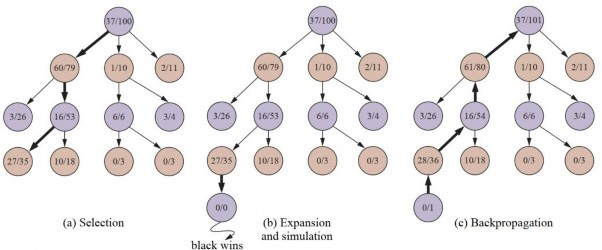
function MONTE-CARLO-TREE-SEARCH(state) returns an action
tree ← NODE(state)
while Is-Time-Remaining() do
leaf ← Select(tree) child ← Expand(leaf)
result ← Simulate(child)
Back-Propagate(result, child)
return the move in ACTIONS(state) whose node has highest number of playouts
Hình 6.11 Thuật toán tìm kiếm cây Monte Carlo. Một cây trò chơi, tree, được khởi tạo, và sau đó chúng ta lặp lại một chu trình SELECT / EXPAND / SIMULATE / BACK-PROPAGATE cho đến khi chúng ta hết thời gian, và trả về nước đi đã dẫn đến nút có số playout cao nhất.
Chúng ta lặp lại bốn bước này cho một số lần lặp đã định, hoặc cho đến khi thời gian được phân bổ đã hết, và sau đó trả về nước đi có số playout cao nhất.
Một chính sách lựa chọn rất hiệu quả được gọi là “giới hạn tin cậy trên áp dụng cho cây” hoặc UCT. Chính sách này xếp hạng mỗi nước đi có thể có dựa trên một công thức giới hạn tin cậy trên gọi là UCB1. (Xem Mục 16.3.3 để biết thêm chi tiết.) Đối với một nút 𝑛 , công thức là:
𝑈𝐶𝐵1(𝑛) = 𝑈(𝑛) + 𝐶 × √log𝑁(𝑃𝐴𝑅𝐸𝑁𝑇(𝑛))
𝑁(𝑛) 𝑁(𝑛)
trong đó 𝑈(𝑛) là tổng tiện ích của tất cả các playout đã đi qua nút 𝑛 , 𝑁(𝑛) là số playout qua nút
𝑛 , và 𝑡𝑒𝑥𝑡𝑃𝐴𝑅𝐸𝑁𝑇(𝑛) là nút cha của 𝑛 trong cây. Do đó, 𝑓𝑟𝑎𝑐𝑈(𝑛)𝑁(𝑛) là thuật ngữ khai thác: tiện ích trung bình của 𝑛 . Thuật ngữ với căn bậc hai là thuật ngữ khám phá: nó có số đếm 𝑁(𝑛) trong mẫu số, có nghĩa là thuật ngữ sẽ cao đối với các nút chỉ được khám phá một vài lần. Trong tử số, nó có logarit của số lần chúng ta đã khám phá cha của 𝑛 . Điều này có nghĩa là nếu chúng ta đang chọn 𝑛 một tỷ lệ phần trăm khác không nào đó của thời gian, thuật ngữ khám phá sẽ tiến về không khi số đếm tăng lên, và cuối cùng các playout được đưa cho nút có tiện ích trung bình cao nhất. 𝐶 là một hằng số cân bằng khai thác và khám phá. Có một lập luận lý thuyết rằng 𝐶 nên là
𝑠𝑞𝑟𝑡2 , nhưng trong thực tế, các lập trình viên trò chơi thử nhiều giá trị khác nhau cho 𝐶 và chọn giá trị hoạt động tốt nhất. (Một số chương trình sử dụng các công thức hơi khác; ví dụ, AlphaGo thêm vào một thuật ngữ cho xác suất nước đi, được tính bằng một mạng nơ-ron được đào tạo từ việc tự chơi trong quá khứ.) Với 𝐶 = 1.4 , nút 60/79 trong Hình 6.10 có điểm UCB1 cao nhất, nhưng với 𝐶 = 1.5 , nó sẽ là nút 2/11.
Hình 6.11 cho thấy thuật toán MCTS UCT hoàn chỉnh. Khi các lần lặp kết thúc, nước đi có số playout cao nhất được trả về. Bạn có thể nghĩ rằng sẽ tốt hơn nếu trả về nút có tiện ích trung bình cao nhất, nhưng ý tưởng là một nút với 65/100 lần thắng tốt hơn một nút với 2/3 lần thắng, vì nút sau có nhiều sự không chắc chắn. Trong mọi trường hợp, công thức UCB1 đảm bảo rằng nút có nhiều playout nhất gần như luôn là nút có tỷ lệ thắng cao nhất, vì quá trình lựa chọn ủng hộ tỷ lệ thắng ngày càng nhiều hơn khi số lượng playout tăng lên.
Thời gian để tính toán một playout là tuyến tính, không phải hàm mũ, theo độ sâu của cây trò chơi, vì chỉ có một nước đi được thực hiện tại mỗi điểm lựa chọn. Điều đó cho chúng ta nhiều thời gian cho nhiều playout. Ví dụ: hãy xem xét một trò chơi có hệ số phân nhánh là 32, nơi ván đấu trung
bình kéo dài 100 ply. Nếu chúng ta có đủ sức mạnh tính toán để xem xét một tỷ trạng thái trò chơi trước khi chúng ta phải thực hiện một nước đi, thì minimax có thể tìm kiếm sâu 6 ply, alpha-beta với sắp xếp nước đi hoàn hảo có thể tìm kiếm 12 ply, và tìm kiếm Monte Carlo có thể thực hiện 10 triệu playout. Cách tiếp cận nào sẽ tốt hơn? Điều đó phụ thuộc vào độ chính xác của hàm heuristic so với các chính sách lựa chọn và playout.
Quan niệm thông thường là tìm kiếm Monte Carlo có lợi thế hơn alpha-beta cho các trò chơi như Cờ vây, nơi hệ số phân nhánh rất cao (và do đó alpha-beta không thể tìm kiếm đủ sâu), hoặc khi khó xác định một hàm đánh giá tốt. Điều mà alpha-beta làm là chọn đường dẫn đến một nút có điểm hàm đánh giá cao nhất có thể đạt được, với giả định rằng đối thủ sẽ cố gắng giảm thiểu điểm số. Do đó, nếu hàm đánh giá không chính xác, alpha-beta sẽ không chính xác. Một tính toán sai trên một nút duy nhất có thể dẫn alpha-beta đến việc chọn (hoặc tránh) một cách sai lầm một đường dẫn đến nút đó. Nhưng tìm kiếm Monte Carlo dựa trên tổng hợp của nhiều playout, và do đó không dễ bị tổn thương bởi một lỗi duy nhất. Có thể kết hợp MCTS và các hàm đánh giá bằng cách thực hiện một playout cho một số nước đi nhất định, nhưng sau đó cắt bớt playout và áp dụng một hàm đánh giá.
Cũng có thể kết hợp các khía cạnh của tìm kiếm alpha-beta và Monte Carlo. Ví dụ, trong các trò chơi có thể kéo dài nhiều nước đi, chúng ta có thể muốn sử dụng kết thúc playout sớm, trong đó chúng ta dừng một playout đang mất quá nhiều nước đi, và hoặc đánh giá nó bằng một hàm đánh giá heuristic hoặc chỉ tuyên bố đó là một trận hòa.
Tìm kiếm Monte Carlo có thể được áp dụng cho các trò chơi hoàn toàn mới, trong đó không có kinh nghiệm để dựa vào để xác định một hàm đánh giá. Miễn là chúng ta biết các quy tắc của trò chơi, tìm kiếm Monte Carlo không cần bất kỳ thông tin bổ sung nào. Các chính sách lựa chọn và playout có thể tận dụng tốt kiến thức chuyên môn được tạo thủ công khi nó có sẵn, nhưng các chính sách tốt có thể được học bằng cách sử dụng mạng nơ-ron được đào tạo chỉ bằng việc tự chơi.
Tìm kiếm Monte Carlo có một nhược điểm khi có khả năng một nước đi duy nhất có thể thay đổi cục diện của trò chơi, bởi vì bản chất ngẫu nhiên của tìm kiếm Monte Carlo có nghĩa là nó có thể không xem xét nước đi đó. Nói cách khác, cắt tỉa Loại B trong tìm kiếm Monte Carlo có nghĩa là một đường lối chơi quan trọng có thể không được khám phá chút nào. Tìm kiếm Monte Carlo cũng có một nhược điểm khi có các trạng thái trò chơi “rõ ràng” là một chiến thắng cho một bên này hay bên kia (theo kiến thức của con người và một hàm đánh giá), nhưng vẫn sẽ mất nhiều nước đi trong một playout để xác minh người chiến thắng. Người ta đã giữ quan niệm rằng tìm kiếm alpha- beta phù hợp hơn cho các trò chơi như cờ vua với hệ số phân nhánh thấp và các hàm đánh giá tốt, nhưng gần đây các cách tiếp cận Monte Carlo đã chứng minh thành công trong cờ vua và các trò chơi khác.
Ý tưởng chung về việc mô phỏng các nước đi trong tương lai, quan sát kết quả và sử dụng kết quả để xác định nước đi nào là tốt là một loại học tăng cường, được đề cập trong Chương 23.
Trò chơi ngẫu nhiên
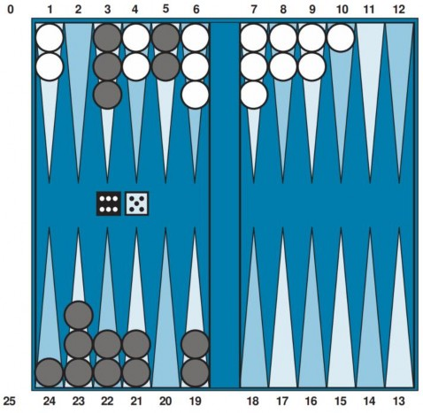
Tại thời điểm này, Đen biết những nước đi nào có thể được thực hiện, nhưng không biết Trắng sẽ tung ra những gì và do đó không biết các nước đi hợp lệ của Trắng sẽ là gì. Điều đó có nghĩa là Đen không thể xây dựng một cây trò chơi tiêu chuẩn như chúng ta đã thấy trong cờ vua và cờ ca- rô. Một cây trò chơi trong cờ tào cáo phải bao gồm các nút ngẫu nhiên ngoài các nút MAX và MIN. Các nút ngẫu nhiên được hiển thị dưới dạng hình tròn trong Hình 6.13. Các nhánh dẫn từ mỗi nút ngẫu nhiên biểu thị các lần tung xúc xắc có thể có; mỗi nhánh được gán nhãn với lần tung và xác suất của nó. Có 36 cách để tung hai con xúc xắc, mỗi cách có khả năng như nhau; nhưng vì 6-5 cũng giống như 5-6, chỉ có 21 lần tung khác biệt. Sáu lần tung đôi (1-1 đến 6-6) mỗi lần có xác suất là 1/36, vì vậy chúng ta nói 𝑃(1 − 1) = 1/36 . 15 lần tung khác biệt còn lại mỗi lần có xác suất là 1/18.
Bước tiếp theo là hiểu cách đưa ra các quyết định đúng. Rõ ràng, chúng ta vẫn muốn chọn nước đi
dẫn đến vị trí tốt nhất. Tuy nhiên, các vị trí không có giá trị minimax xác định. Thay vào đó, chúng
ta chỉ có thể tính toán giá trị kỳ vọng của một vị trí: giá trị trung bình trên tất cả các kết quả có thể có của các nút ngẫu nhiên.
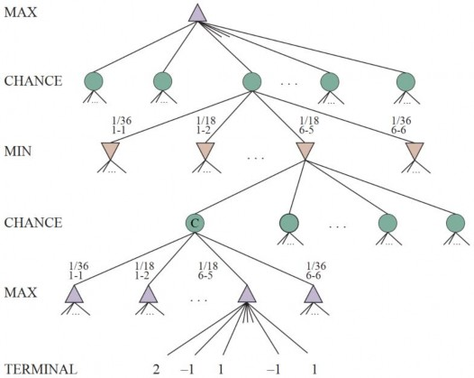
Điều này dẫn chúng ta đến giá trị expectiminimax cho các trò chơi có nút ngẫu nhiên, một sự tổng quát hóa của giá trị minimax cho các trò chơi tất định. Các nút kết thúc và các nút MAX và MIN hoạt động chính xác giống như trước đây (với lưu ý rằng các nước đi hợp lệ cho MAX và MIN sẽ phụ thuộc vào kết quả của lần tung xúc xắc trong nút ngẫu nhiên trước đó). Đối với các nút ngẫu nhiên, chúng ta tính toán giá trị kỳ vọng, là tổng của giá trị trên tất cả các kết quả, được trọng số bằng xác suất của mỗi hành động ngẫu nhiên:
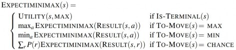
trong đó 𝑟 đại diện cho một lần tung xúc xắc có thể có (hoặc sự kiện ngẫu nhiên khác) và
𝑅𝐸𝑆𝑈𝐿𝑇(𝑠, 𝑟) là cùng một trạng thái với 𝑠 , với thực tế bổ sung rằng kết quả của lần tung xúc xắc là 𝑟 .
Các hàm đánh giá cho trò chơi may rủi
Cũng như với minimax, xấp xỉ rõ ràng cần thực hiện với expectiminimax là cắt bớt tìm kiếm tại một số điểm và áp dụng một hàm đánh giá cho mỗi nút lá. Người ta có thể nghĩ rằng các hàm đánh giá cho các trò chơi như cờ tào cáo nên giống như các hàm đánh giá cho cờ vua—chúng chỉ cần gán các giá trị cao hơn cho các vị trí tốt hơn. Nhưng trên thực tế, sự hiện diện của các nút ngẫu nhiên có nghĩa là người ta phải cẩn thận hơn về ý nghĩa của các giá trị.
Hình 6.14 cho thấy điều gì xảy ra: với một hàm đánh giá gán các giá trị [1,2,3,4] cho các nút lá, nước đi 𝑎1 là tốt nhất; với các giá trị [1,20,30,400] , nước đi 𝑎2 là tốt nhất. Do đó, chương trình hoạt động hoàn toàn khác nếu chúng ta thực hiện một thay đổi đối với một số giá trị đánh giá, ngay cả khi thứ tự ưu tiên vẫn giữ nguyên.
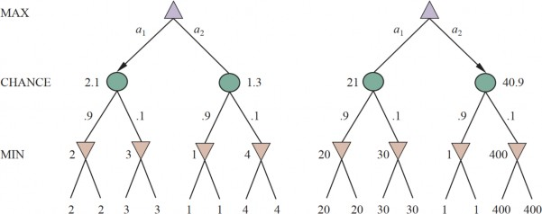
Hóa ra, để tránh vấn đề này, hàm đánh giá phải trả về các giá trị là một phép biến đổi tuyến tínhcủa xác suất chiến thắng (hoặc của tiện ích kỳ vọng, đối với các trò chơi có kết quả khác ngoài thắng/thua). Mối quan hệ với xác suất này là một thuộc tính quan trọng và tổng quát của các tình huống liên quan đến sự không chắc chắn, và chúng ta sẽ thảo luận thêm về nó trong Chương 15.
Nếu chương trình biết trước tất cả các lần tung xúc xắc sẽ xảy ra trong phần còn lại của trò chơi, việc giải một trò chơi với xúc xắc sẽ giống như giải một trò chơi không có xúc xắc, mà minimax thực hiện trong thời gian 𝑂(𝑏𝑚) , trong đó 𝑏 là hệ số phân nhánh và 𝑚 là độ sâu tối đa của cây trò chơi. Bởi vì expectiminimax cũng đang xem xét tất cả các chuỗi tung xúc xắc có thể có, nó sẽ mất
𝑂(𝑏𝑚𝑛𝑚) , trong đó 𝑛 là số lần tung khác biệt.
Ngay cả khi việc tìm kiếm bị giới hạn ở một độ sâu nhỏ 𝑑 , chi phí bổ sung so với minimax làm cho việc xem xét việc nhìn xa hơn trong hầu hết các trò chơi may rủi là không thực tế. Trong cờ tào cáo, 𝑛 là 21 và 𝑏 thường là khoảng 20, nhưng trong một số tình huống có thể lên tới 4000 đối với các lần tung xúc xắc đôi. Chúng ta có thể chỉ quản lý được ba ply tìm kiếm.
Một cách khác để suy nghĩ về vấn đề là như thế này: lợi thế của alpha-beta là nó bỏ qua những diễn biến trong tương lai mà sẽ không xảy ra, với lối chơi tốt nhất. Do đó, nó tập trung vào các sự
kiện có khả năng xảy ra. Nhưng trong một trò chơi mà mỗi nước đi có một lần tung hai con xúc xắc đi trước, không có chuỗi nước đi có khả năng xảy ra; ngay cả nước đi có khả năng xảy ra nhất cũng chỉ xảy ra 2/36 lần, bởi vì để nước đi diễn ra, xúc xắc trước tiên phải ra đúng cách để nó hợp lệ. Đây là một vấn đề chung bất cứ khi nào sự không chắc chắn xuất hiện: các khả năng được nhân lên một cách khủng khiếp, và việc hình thành các kế hoạch hành động chi tiết trở nên vô nghĩa vì thế giới có thể sẽ không diễn ra như vậy.
Bạn có thể đã nghĩ rằng một cái gì đó giống như cắt tỉa alpha-beta có thể được áp dụng cho cây trò chơi với các nút ngẫu nhiên. Hóa ra là nó có thể. Phân tích cho các nút MIN và MAX không thay đổi, nhưng chúng ta cũng có thể cắt tỉa các nút ngẫu nhiên, bằng một chút khéo léo. Hãy xem xét nút ngẫu nhiên 𝐶 trong Hình 6.13 và điều gì xảy ra với giá trị của nó khi chúng ta đánh giá các con của nó. Có thể tìm thấy một giới hạn trên cho giá trị của 𝐶 trước khi chúng ta đã xem xét tất cả các con của nó không? (Nhớ lại rằng đây là điều mà alpha-beta cần để cắt tỉa một nút và cây con của nó.)
Ban đầu, có vẻ như điều đó là không thể vì giá trị của 𝐶 là giá trị trung bình của các giá trị của các con của nó, và để tính toán giá trị trung bình của một tập hợp các số, chúng ta phải xem xét tất cả các số. Nhưng nếu chúng ta đặt giới hạn cho các giá trị có thể có của hàm tiện ích, thì chúng ta có thể đi đến các giới hạn cho giá trị trung bình mà không cần xem xét mọi số. Ví dụ, giả sử tất cả các giá trị tiện ích đều nằm giữa -2 và +2; khi đó giá trị của các nút lá bị giới hạn, và lần lượt chúng ta có thể đặt một giới hạn trên cho giá trị của một nút ngẫu nhiên mà không cần xem xét tất cả các con của nó.
Trong các trò chơi mà hệ số phân nhánh cho các nút ngẫu nhiên cao—hãy xem xét một trò chơi như Yahtzee, nơi bạn tung 5 con xúc xắc trong mỗi lượt—bạn có thể muốn xem xét cắt tỉa về phía trước lấy mẫu một số lượng nhỏ hơn các nhánh ngẫu nhiên có thể có. Hoặc bạn có thể muốn tránh sử dụng hàm đánh giá hoàn toàn, và thay vào đó chọn tìm kiếm cây Monte Carlo, trong đó mỗi playout bao gồm các lần tung xúc xắc ngẫu nhiên.
Trò chơi quan sát một phần
Bobby Fischer tuyên bố rằng “cờ vua là chiến tranh,” nhưng cờ vua thiếu ít nhất một đặc điểm chính của các cuộc chiến tranh thực sự, đó là khả năng quan sát một phần. Trong “sương mù chiến tranh,” vị trí của các đơn vị địch thường không được biết cho đến khi được tiết lộ bằng tiếp xúc trực tiếp. Do đó, chiến tranh bao gồm việc sử dụng trinh sát và gián điệp để thu thập thông tin và sử dụng ngụy trang và lừa dối để làm bối rối kẻ thù.
Các trò chơi quan sát một phần chia sẻ những đặc điểm này và do đó khác biệt về mặt định tính so với các trò chơi trong các phần trước. Các trò chơi điện tử như StarCraft đặc biệt thách thức, vì chúng vừa có thể quan sát một phần, vừa có nhiều tác nhân, không tất định, năng động và không xác định.
Trong các trò chơi quan sát một phần tất định, sự không chắc chắn về trạng thái của bàn cờ hoàn toàn phát sinh từ việc thiếu quyền truy cập vào các lựa chọn của đối thủ. Lớp này bao gồm các trò chơi của trẻ em như Tàu chiến (trong đó các con tàu của mỗi người chơi được đặt ở những vị trí ẩn đối với đối thủ) và Cờ chiến lược (trong đó vị trí quân cờ được biết nhưng loại quân cờ bị ẩn). Chúng ta sẽ xem xét trò chơi Kriegspiel, một biến thể quan sát một phần của cờ vua trong đó các quân cờ hoàn toàn vô hình đối với đối thủ. Các trò chơi khác cũng có các phiên bản quan sát một phần: Cờ vây ma, cờ ca-rô ma và Shogi màn hình.
Kriegspiel: Cờ vua quan sát một phần
Các quy tắc của Kriegspiel như sau: Trắng và Đen mỗi người chỉ nhìn thấy một bàn cờ chỉ chứa các quân cờ của riêng họ. Một trọng tài, người có thể nhìn thấy tất cả các quân cờ, phân xử trò chơi và định kỳ đưa ra các thông báo mà cả hai người chơi đều nghe thấy. Đầu tiên, Trắng đề xuất với trọng tài một nước đi sẽ hợp lệ nếu không có quân cờ đen. Nếu các quân cờ đen ngăn cản nước đi, trọng tài thông báo “bất hợp pháp”, và Trắng tiếp tục đề xuất các nước đi cho đến khi tìm thấy một nước hợp lệ—học hỏi thêm về vị trí của các quân cờ của Đen trong quá trình đó.
Khi một nước đi hợp lệ được đề xuất, trọng tài thông báo một hoặc nhiều điều sau đây: “Bắt quân trên ô X” nếu có một nước bắt, và “Chiếu bởi D” nếu vua đen bị chiếu, trong đó D là hướng của nước chiếu, và có thể là một trong “Mã,” “Hàng,” “Cột,” “Đường chéo dài,” hoặc “Đường chéo ngắn.” Nếu Đen bị chiếu hết hoặc bị bế tắc, trọng tài sẽ nói như vậy; nếu không, đến lượt Đen di chuyển.
Kriegspiel có vẻ bất khả thi một cách đáng sợ, nhưng con người xử lý nó khá tốt và các chương trình máy tính đang bắt đầu bắt kịp. Nó giúp gợi lại khái niệm về trạng thái niềm tin như được định nghĩa trong Mục 4.4 và được minh họa trong Hình 4.14—tập hợp tất cả các trạng thái bàn cờ có thể có về mặt logic dựa trên toàn bộ lịch sử các nhận thức cho đến nay. Ban đầu, trạng thái niềm tin của Trắng là một tập hợp đơn vì các quân cờ của Đen chưa di chuyển. Sau khi Trắng thực hiện một nước đi và Đen đáp lại, trạng thái niềm tin của Trắng chứa 20 vị trí, vì Đen có 20 câu trả lời cho bất kỳ nước đi khai cuộc nào. Theo dõi trạng thái niềm tin khi trò chơi diễn ra chính xác là vấn đề của ước tính trạng thái, trong đó bước cập nhật được đưa ra trong Phương trình (4.6) trên trang 150. Chúng ta có thể ánh xạ ước tính trạng thái Kriegspiel trực tiếp lên khuôn khổ quan sát một phần, không tất định của Mục 4.4 nếu chúng ta coi đối thủ là nguồn gốc của sự không tất định; nghĩa là, các KẾT QUẢ của nước đi của Trắng được cấu thành từ kết quả (có thể dự đoán được) của nước đi của chính Trắng và kết quả không thể đoán trước được đưa ra bởi câu trả lời của Đen.
Với một trạng thái niềm tin hiện tại, Trắng có thể hỏi, “Tôi có thể thắng ván đấu không?” Đối với một trò chơi quan sát một phần, khái niệm về một chiến lược bị thay đổi; thay vì chỉ định một nước đi để thực hiện cho mỗi nước đi có thể có của đối thủ, chúng ta cần một nước đi cho mọi chuỗi nhận thức có thể được nhận.
Đối với Kriegspiel, một chiến lược chiến thắng, hoặc chiếu hết được đảm bảo, là một chiến lược mà, đối với mỗi chuỗi nhận thức có thể có, dẫn đến một nước chiếu hết thực tế cho mọi trạng thái bàn cờ có thể có trong trạng thái niềm tin hiện tại, bất kể đối thủ di chuyển như thế nào. Với định nghĩa này, trạng thái niềm tin của đối thủ là không liên quan—chiến lược phải hoạt động ngay cả khi đối thủ có thể nhìn thấy tất cả các quân cờ. Điều này giúp đơn giản hóa đáng kể việc tính toán. Hình 6.15 cho thấy một phần của một nước chiếu hết được đảm bảo cho tàn cuộc KRK (vua và xe đấu với vua). Trong trường hợp này, Đen chỉ có một quân cờ (vua), vì vậy một trạng thái niềm tin cho Trắng có thể được hiển thị trong một bàn cờ duy nhất bằng cách đánh dấu mỗi vị trí có thể có của vua Đen.
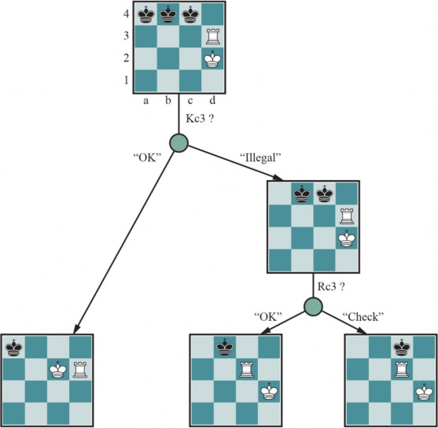
Thuật toán tìm kiếm AND-OR tổng quát có thể được áp dụng cho không gian trạng thái niềm tin để tìm các nước chiếu hết được đảm bảo, giống như trong Mục 4.4. Thuật toán trạng thái niềm tin tăng dần được đề cập trong Mục 4.4.2 thường tìm thấy các nước chiếu hết giữa trận đấu lên đến độ sâu 9—vượt xa khả năng của hầu hết người chơi con người.
Ngoài các nước chiếu hết được đảm bảo, Kriegspiel thừa nhận một khái niệm hoàn toàn mới không có ý nghĩa trong các trò chơi có thể quan sát đầy đủ: chiếu hết xác suất. Các nước chiếu hết như vậy vẫn được yêu cầu phải hoạt động trong mọi trạng thái bàn cờ trong trạng thái niềm tin; chúng là xác suất đối với việc ngẫu nhiên hóa các nước đi của người chơi chiến thắng. Để có được ý tưởng cơ bản, hãy xem xét vấn đề tìm một vua đen đơn độc chỉ bằng cách sử dụng vua trắng. Chỉ bằng cách di chuyển ngẫu nhiên, vua trắng cuối cùng sẽ va chạm với vua đen ngay cả khi vua đen
cố gắng tránh số phận này, vì Đen không thể tiếp tục đoán đúng các nước đi né tránh vô thời hạn. Theo thuật ngữ của lý thuyết xác suất, việc phát hiện xảy ra với xác suất 1.
Tàn cuộc KBNK—vua, tượng và mã đấu với vua—được thắng theo nghĩa này; Trắng đưa cho Đen một chuỗi lựa chọn ngẫu nhiên vô hạn, trong đó Đen sẽ đoán sai một và tiết lộ vị trí của mình, dẫn đến chiếu hết. Mặt khác, tàn cuộc KBBK được thắng với xác suất 1 − 𝜖 . Trắng chỉ có thể buộc thắng bằng cách để một trong các con tượng của mình không được bảo vệ trong một nước đi. Nếu Đen tình cờ ở đúng vị trí và bắt tượng (một nước đi sẽ bất hợp pháp nếu các con tượng được bảo vệ), trò chơi sẽ hòa. Trắng có thể chọn thực hiện nước đi rủi ro tại một thời điểm được chọn ngẫu nhiên ở giữa một chuỗi rất dài, do đó giảm 𝜖 xuống một hằng số nhỏ tùy ý, nhưng không thể giảm
𝜖 xuống không.
Đôi khi một chiến lược chiếu hết hoạt động cho một số trạng thái bàn cờ trong trạng thái niềm tin hiện tại nhưng không phải các trạng thái khác. Việc thử một chiến lược như vậy có thể thành công, dẫn đến một nước chiếu hết ngẫu nhiên—ngẫu nhiên theo nghĩa là Trắng không thể biết rằng đó sẽ là chiếu hết—nếu các quân cờ của Đen tình cờ ở đúng vị trí. (Hầu hết các nước chiếu hết trong các ván đấu giữa con người đều có bản chất ngẫu nhiên này.) Ý tưởng này dẫn tự nhiên đến câu hỏi về khả năng một chiến lược nhất định sẽ thắng là bao nhiêu, lần lượt dẫn đến câu hỏi về khả năng mỗi trạng thái bàn cờ trong trạng thái niềm tin hiện tại là trạng thái bàn cờ thực sự là bao nhiêu.
Khuynh hướng đầu tiên của người ta có thể là đề xuất rằng tất cả các trạng thái bàn cờ trong trạng thái niềm tin hiện tại đều có khả năng như nhau—nhưng điều này không thể đúng. Ví dụ, hãy xem xét trạng thái niềm tin của Trắng sau nước đi đầu tiên của Đen. Theo định nghĩa (giả sử rằng Đen chơi tối ưu), Đen phải đã chơi một nước đi tối ưu, vì vậy tất cả các trạng thái bàn cờ do các nước đi không tối ưu tạo ra phải được gán xác suất bằng không.
Lập luận này cũng không hoàn toàn đúng, bởi vì mục tiêu của mỗi người chơi không chỉ là di chuyển các quân cờ đến đúng ô mà còn là giảm thiểu thông tin mà đối thủ có về vị trí của họ. Chơi bất kỳ chiến lược “tối ưu” có thể dự đoán nào đều cung cấp cho đối thủ thông tin. Do đó, lối chơi tối ưu trong các trò chơi quan sát một phần đòi hỏi sự sẵn sàng chơi một cách ngẫu nhiên. (Đây là lý do tại sao các thanh tra vệ sinh nhà hàng thực hiện các chuyến kiểm tra ngẫu nhiên.) Điều này có nghĩa là thỉnh thoảng chọn các nước đi có vẻ “vốn dĩ” yếu—nhưng chúng có được sức mạnh từ chính sự không thể đoán trước của chúng, bởi vì đối thủ không có khả năng đã chuẩn bị bất kỳ sự phòng thủ nào chống lại chúng.
Từ những cân nhắc này, có vẻ như xác suất liên quan đến các trạng thái bàn cờ trong trạng thái niềm tin hiện tại chỉ có thể được tính toán khi biết một chiến lược ngẫu nhiên tối ưu; lần lượt, việc tính toán chiến lược đó dường như yêu cầu biết xác suất của các trạng thái khác nhau mà bàn cờ có thể ở. Tình huống khó xử này có thể được giải quyết bằng cách áp dụng khái niệm lý thuyết trò chơi về một giải pháp cân bằng, mà chúng ta theo đuổi thêm trong Chương 16. Một sự cân bằng chỉ định một chiến lược ngẫu nhiên tối ưu cho mỗi người chơi. Việc tính toán sự cân bằng quá tốn kém đối với Kriegspiel. Hiện tại, việc thiết kế các thuật toán hiệu quả cho lối chơi Kriegspiel tổng quát là một chủ đề nghiên cứu mở. Hầu hết các hệ thống thực hiện việc nhìn trước độ sâu giới hạn trong không gian trạng thái niềm tin của riêng họ, bỏ qua trạng thái niềm tin của đối thủ. Các hàm đánh giá giống với các hàm đánh giá cho trò chơi có thể quan sát được nhưng bao gồm một thành phần cho kích thước của trạng thái niềm tin—nhỏ hơn thì tốt hơn! Chúng ta sẽ quay lại các trò chơi quan sát một phần dưới chủ đề Lý thuyết trò chơi trong Mục 17.2.
Trò chơi bài
Các trò chơi bài như bridge, whist, hearts, và poker có đặc điểm quan sát một phần ngẫu nhiên,
trong đó thông tin bị thiếu được tạo ra bởi việc chia bài ngẫu nhiên.
Thoạt nhìn, có vẻ như các trò chơi bài này giống như các trò chơi xúc xắc: các lá bài được chia ngẫu nhiên và xác định các nước đi có sẵn cho mỗi người chơi, nhưng tất cả “xúc xắc” đều được tung ngay từ đầu! Mặc dù phép loại suy này hóa ra không chính xác, nó gợi ý một thuật toán: coi phần đầu của trò chơi như một nút ngẫu nhiên với mọi lần chia bài có thể có là một kết quả, và sau đó sử dụng công thức EXPECTIMINIMAX để chọn nước đi tốt nhất. Lưu ý rằng trong cách tiếp cận này, nút ngẫu nhiên duy nhất là nút gốc; sau đó trò chơi trở nên có thể quan sát đầy đủ. Cách tiếp cận này đôi khi được gọi là trung bình hóa sự thấu thị vì nó giả định rằng một khi việc chia bài thực tế đã xảy ra, trò chơi trở nên có thể quan sát đầy đủ đối với cả hai người chơi. Mặc dù có sức hấp dẫn trực quan, chiến lược này có thể dẫn đến sai lầm. Hãy xem xét câu chuyện sau:
Ngày 1: Con đường A dẫn đến một hũ vàng; Con đường B dẫn đến một ngã ba. Bạn có thể thấy rằng ngã rẽ bên trái dẫn đến hai hũ vàng, và ngã rẽ bên phải dẫn đến việc bạn bị xe buýt cán qua.
Ngày 2: Con đường A dẫn đến một hũ vàng; Con đường B dẫn đến một ngã ba. Bạn có thể thấy rằng ngã rẽ bên phải dẫn đến hai hũ vàng, và ngã rẽ bên trái dẫn đến việc bạn bị xe buýt cán qua.
Ngày 3: Con đường A dẫn đến một hũ vàng; Con đường B dẫn đến một ngã ba. Bạn được cho biết rằng một ngã rẽ dẫn đến hai hũ vàng, và một ngã rẽ dẫn đến việc bạn bị xe buýt cán qua. Thật không may, bạn không biết ngã rẽ nào là cái nào.
Trung bình hóa sự thấu thị dẫn đến lý luận sau: vào Ngày 1, B là lựa chọn đúng; vào Ngày 2, B là lựa chọn đúng; vào Ngày 3, tình huống giống như Ngày 1 hoặc Ngày 2, vì vậy B vẫn phải là lựa chọn đúng.
Bây giờ chúng ta có thể thấy trung bình hóa sự thấu thị thất bại như thế nào: nó không xem xét trạng thái niềm tin mà tác nhân sẽ ở sau khi hành động. Một trạng thái niềm tin hoàn toàn thiếu kiến thức là không mong muốn, đặc biệt khi một khả năng là cái chết chắc chắn. Bởi vì nó giả định rằng mọi trạng thái tương lai sẽ tự động là một trong những kiến thức hoàn hảo, cách tiếp cận thấu thị không bao giờ chọn các hành động thu thập thông tin (như nước đi đầu tiên trong Hình 6.15); nó cũng sẽ không chọn các hành động che giấu thông tin khỏi đối thủ hoặc cung cấp thông tin cho một đối tác, bởi vì nó giả định rằng họ đã biết thông tin đó; và nó sẽ không bao giờ bluff trong poker, vì nó giả định đối thủ có thể nhìn thấy bài của mình. Trong Chương 16, chúng ta sẽ chỉ ra cách xây dựng các thuật toán thực hiện tất cả những điều này nhờ giải quyết vấn đề quyết định quan sát một phần thực sự, dẫn đến một chiến lược cân bằng tối ưu (xem Mục 17.2).
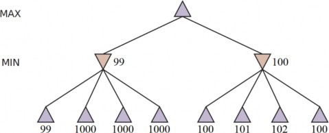
Bất chấp những hạn chế, trung bình hóa sự thấu thị có thể là một chiến lược hiệu quả, với một số thủ thuật để làm cho nó hoạt động tốt hơn. Trong hầu hết các trò chơi bài, số lần chia bài có thể có khá lớn. Ví dụ, trong ván bridge, mỗi người chơi chỉ nhìn thấy hai trong số bốn bộ bài; có hai bộ
bài không nhìn thấy được, mỗi bộ 13 lá, vì vậy số lần chia bài là
26) ≈ 10,400,600
(
13
. Giải quyết
ngay cả một lần chia bài là khá khó khăn, vì vậy giải quyết mười triệu lần là không thể. Một cách để xử lý con số khổng lồ này là trừu tượng hóa: tức là bằng cách coi các bộ bài tương tự là giống hệt nhau. Ví dụ, rất quan trọng là những quân át và vua nào có trong một bộ bài, nhưng việc bộ bài có quân 4 hay 5 thì không quan trọng bằng, và có thể được trừu tượng hóa.
Một cách khác để xử lý số lượng lớn là cắt tỉa về phía trước: chỉ xem xét một mẫu ngẫu nhiên nhỏ gồm 𝑁 lần chia bài, và lại tính toán điểm EXPECTIMINIMAX. Ngay cả đối với 𝑁 khá nhỏ— chẳng hạn, 100 đến 1.000—phương pháp này đưa ra một xấp xỉ tốt. Nó cũng có thể được áp dụng cho các trò chơi tất định như Kriegspiel, nơi chúng ta lấy mẫu trên các trạng thái có thể có của trò chơi thay vì trên các lần chia bài có thể có, miễn là chúng ta có một cách nào đó để ước tính khả năng xảy ra của mỗi trạng thái. Việc tìm kiếm heuristic với một giới hạn độ sâu cũng có thể hữu ích thay vì tìm kiếm toàn bộ cây trò chơi.
Cho đến nay chúng ta đã giả định rằng mỗi lần chia bài có khả năng như nhau. Điều đó có ý nghĩa đối với các trò chơi như whist và hearts. Nhưng đối với bridge, ván chơi được bắt đầu bằng một giai đoạn đấu giá trong đó mỗi đội chỉ ra số mánh khóe mà nó dự kiến sẽ thắng. Vì người chơi đấu giá dựa trên các lá bài họ cầm, những người chơi khác học được một cái gì đó về xác suất 𝑃(𝑠) của mỗi lần chia bài. Việc tính toán điều này khi quyết định cách chơi một bộ bài là phức tạp, vì những lý do được đề cập trong mô tả của chúng tôi về Kriegspiel: người chơi có thể đấu giá theo cách để giảm thiểu thông tin được truyền đạt cho đối thủ của họ.
Máy tính đã đạt đến trình độ siêu phàm trong poker. Chương trình poker Libratus đã đối đầu với bốn trong số những người chơi poker hàng đầu thế giới trong một trận đấu không giới hạn Texas hold ’em kéo dài 20 ngày và đánh bại tất cả họ một cách dứt khoát. Vì có rất nhiều trạng thái có thể có trong poker, Libratus sử dụng trừu tượng hóa để giảm không gian trạng thái: nó có thể coi hai bộ bài AAA72 và AAA64 là tương đương (chúng đều là “ba quân át và một số quân bài thấp”), và nó có thể coi một cược 200 đô la là giống với 201 đô la. Nhưng Libratus cũng theo dõi những
người chơi khác, và nếu nó phát hiện họ đang khai thác một sự trừu tượng, nó sẽ thực hiện một số tính toán bổ sung qua đêm để lấp đầy lỗ hổng đó. Nhìn chung, nó đã sử dụng 25 triệu giờ CPU trên một siêu máy tính để giành chiến thắng.
Chi phí tính toán mà Libratus phải chịu (và chi phí tương tự của ALPHAZERO và các hệ thống khác) cho thấy rằng việc chơi trò chơi ở đẳng cấp vô địch thế giới có thể không đạt được đối với các nhà nghiên cứu có ngân sách hạn chế. Ở một mức độ nào đó, điều đó là đúng: giống như bạn không nên mong đợi có thể lắp ráp một chiếc xe đua Công thức Một vô địch từ các phụ tùng trong nhà để xe của mình, có một lợi thế khi có quyền truy cập vào siêu máy tính hoặc phần cứng chuyên dụng như Bộ xử lý Tensor. Điều đó đặc biệt đúng khi đào tạo một hệ thống, nhưng việc đào tạo cũng có thể được thực hiện thông qua nguồn cung cấp cộng đồng. Ví dụ, hệ thống LEELAZERO mã nguồn mở là một sự tái triển khai của ALPHAZERO, đào tạo thông qua việc tự chơi trên máy tính của những người tham gia tình nguyện. Sau khi được đào tạo, các yêu cầu tính toán cho việc chơi giải đấu thực tế là khiêm tốn. ALPHASTAR đã thắng các trò chơi StarCraft II chạy trên một máy tính để bàn thông thường với một GPU duy nhất, và ALPHAZERO cũng có thể được chạy trong chế độ đó.
Hạn chế của thuật toán tìm kiếm trò chơi
Vì việc tính toán các quyết định tối ưu trong các trò chơi phức tạp là không thể, tất cả các thuật toán phải đưa ra một số giả định và xấp xỉ. Tìm kiếm alpha-beta sử dụng hàm đánh giá heuristic như một phép xấp xỉ, và tìm kiếm Monte Carlo tính toán một giá trị trung bình gần đúng trên một lựa chọn ngẫu nhiên các ván chơi. Lựa chọn thuật toán nào để sử dụng phụ thuộc một phần vào các tính năng của mỗi trò chơi: khi hệ số phân nhánh cao hoặc khó xác định một hàm đánh giá, tìm kiếm Monte Carlo được ưu tiên. Nhưng cả hai thuật toán đều có những hạn chế cơ bản.
Một hạn chế của tìm kiếm alpha-beta là tính dễ bị tổn thương trước các lỗi trong hàm heuristic. Hình 6.16 cho thấy một cây trò chơi hai ply mà minimax gợi ý chọn nhánh bên phải vì 100 > 99
. Đó là nước đi đúng nếu tất cả các đánh giá đều hoàn toàn chính xác. Nhưng giả sử rằng việc đánh giá của mỗi nút có một lỗi độc lập với các nút khác và được phân bố ngẫu nhiên với độ lệch chuẩn là 𝜎 . Khi đó, nhánh bên trái thực sự tốt hơn 71% thời gian khi 𝜎 = 5 , và 58% thời gian khi 𝜎 = 2 (vì một trong bốn nút lá bên phải có khả năng trượt xuống dưới 99 trong những trường hợp này). Nếu lỗi trong hàm đánh giá không độc lập, thì khả năng mắc lỗi sẽ tăng lên. Rất khó để bù đắp cho điều này vì chúng ta không có một mô hình tốt về sự phụ thuộc giữa các giá trị của các nút anh em.
Một hạn chế thứ hai của cả alpha-beta và Monte Carlo là chúng được thiết kế để tính toán (các giới hạn trên) các giá trị của các nước đi hợp lệ. Nhưng đôi khi có một nước đi rõ ràng là tốt nhất (ví dụ khi chỉ có một nước đi hợp lệ), và trong trường hợp đó, không có ích gì khi lãng phí thời gian tính toán để tìm ra giá trị của nước đi—tốt hơn là chỉ thực hiện nước đi đó. Một thuật toán tìm kiếm tốt hơn sẽ sử dụng ý tưởng về tiện ích của một lần mở rộng nút, chọn các lần mở rộng nút có tiện ích cao—nghĩa là, những lần có khả năng dẫn đến việc khám phá một nước đi tốt hơn đáng kể. Nếu không có lần mở rộng nút nào có tiện ích cao hơn chi phí của chúng (về mặt thời gian), thì thuật toán nên ngừng tìm kiếm và thực hiện một nước đi. Điều này không chỉ hoạt động cho các tình huống rõ ràng là tốt nhất mà còn cho trường hợp các nước đi đối xứng, trong đó không có tìm kiếm nào có thể chỉ ra rằng một nước đi tốt hơn nước đi khác.
Loại lý luận về những phép tính nào cần thực hiện này được gọi là siêu lý luận (lý luận về lý luận). Nó không chỉ áp dụng cho việc chơi trò chơi mà còn cho bất kỳ loại lý luận nào. Tất cả các phép tính được thực hiện nhằm cố gắng đưa ra các quyết định tốt hơn, tất cả đều có chi phí và tất cả đều có một khả năng dẫn đến một cải thiện nhất định trong chất lượng quyết định. Tìm kiếm Monte Carlo cố gắng thực hiện siêu lý luận để phân bổ tài nguyên cho các phần quan trọng nhất của cây, nhưng không làm như vậy một cách tối ưu.
Một hạn chế thứ ba là cả alpha-beta và Monte Carlo đều thực hiện tất cả lý luận của chúng ở cấp độ các nước đi riêng lẻ. Rõ ràng, con người chơi trò chơi khác: họ có thể lý luận ở một cấp độ trừu tượng hơn, xem xét một mục tiêu cấp cao hơn—ví dụ, bẫy hậu của đối thủ—và sử dụng mục tiêu đó để tạo ra các kế hoạch hợp lý một cách có chọn lọc. Trong Chương 11, chúng ta sẽ nghiên cứu loại lập kế hoạch này, và trong Mục 11.4, chúng ta sẽ chỉ ra cách lập kế hoạch với một hệ thống phân cấp từ biểu diễn trừu tượng đến cụ thể.
Một vấn đề thứ tư là khả năng kết hợp học máy vào quá trình tìm kiếm trò chơi. Các chương trình trò chơi ban đầu dựa vào kiến thức chuyên môn của con người để tạo ra các hàm đánh giá, sách khai cuộc, chiến lược tìm kiếm và các thủ thuật hiệu quả bằng tay. Chúng ta chỉ mới bắt đầu thấy các chương trình như ALPHAZERO (Silver et al., 2018), dựa vào học máy từ việc tự chơi hơn là kiến thức chuyên môn do con người tạo ra dành riêng cho trò chơi. Chúng ta sẽ đề cập sâu về học máy bắt đầu với Chương 19.
Tóm tắt
Chúng ta đã xem xét nhiều trò chơi khác nhau để hiểu ý nghĩa của lối chơi tối ưu, để hiểu cách chơi tốt trong thực tế và để có cảm nhận về cách một tác nhân nên hành động trong bất kỳ loại môi trường đối kháng nào. Các ý tưởng quan trọng nhất như sau:
Một trò chơi có thể được định nghĩa bởi trạng thái ban đầu (cách bàn cờ được thiết lập), các hành động hợp lệ trong mỗi trạng thái, kết quả của mỗi hành động, một bài kiểm tra kết thúc (cho biết khi nào trò chơi kết thúc), và một hàm tiện ích áp dụng cho các trạng thái kết thúc để cho biết ai đã thắng và điểm cuối cùng là bao nhiêu.
Trong các trò chơi hai người chơi, rời rạc, tất định, theo lượt, tổng bằng không với thông tin hoàn hảo, thuật toán minimax có thể chọn các nước đi tối ưu bằng cách liệt kê cây trò chơi theo chiều sâu.
Thuật toán tìm kiếm alpha-beta tính toán cùng một nước đi tối ưu như minimax, nhưng đạt được hiệu quả lớn hơn nhiều bằng cách loại bỏ các cây con đã được chứng minh là không liên quan.
Thông thường, không khả thi để xem xét toàn bộ cây trò chơi (ngay cả với alpha-beta), vì vậy chúng ta cần cắt tìm kiếm tại một số điểm và áp dụng một hàm đánh giá heuristic để ước tính tiện ích của một trạng thái.
Một giải pháp thay thế được gọi là tìm kiếm cây Monte Carlo (MCTS) đánh giá các trạng thái không phải bằng cách áp dụng một hàm heuristic, mà bằng cách chơi trò chơi cho đến cuối cùng và sử dụng các quy tắc của trò chơi để xem ai đã thắng. Vì các nước đi được
chọn trong quá trình chơi có thể không phải là các nước đi tối ưu, nên quá trình này được lặp lại nhiều lần và đánh giá là giá trị trung bình của các kết quả.
Nhiều chương trình trò chơi tính toán trước các bảng các nước đi tốt nhất trong khai cuộc và tàn cuộc để chúng có thể tra cứu một nước đi thay vì tìm kiếm.
Các trò chơi may rủi có thể được xử lý bằng expectiminimax, một phần mở rộng của thuật toán minimax đánh giá một nút ngẫu nhiên bằng cách lấy tiện ích trung bình của tất cả các con của nó, được trọng số bằng xác suất của mỗi con.
Trong các trò chơi có thông tin không hoàn hảo, chẳng hạn như Kriegspiel và poker, lối chơi tối ưu yêu cầu lý luận về các trạng thái niềm tin hiện tại và tương lai của mỗi người chơi. Một phép xấp xỉ đơn giản có thể đạt được bằng cách lấy giá trị trung bình của một hành động trên mỗi cấu hình có thể có của thông tin bị thiếu.
Các chương trình đã đánh bại một cách thuyết phục các nhà vô địch con người trong cờ vua, cờ đam, Othello, Cờ vây, poker và nhiều trò chơi khác. Con người vẫn giữ ưu thế trong một vài trò chơi có thông tin không hoàn hảo, chẳng hạn như bridge và Kriegspiel. Trong các trò chơi điện tử như StarCraft và Dota 2, các chương trình cạnh tranh với các chuyên gia con người, nhưng một phần thành công của chúng có thể là do khả năng thực hiện nhiều hành động rất nhanh chóng.
Ghi chú thư mục và lịch sử
Năm 1846, Charles Babbage đã thảo luận về tính khả thi của cờ vua và cờ đam trên máy tính (Morrison và Morrison, 1961). Ông không hiểu sự phức tạp theo cấp số nhân của cây tìm kiếm, tuyên bố rằng “các sự kết hợp liên quan đến Động cơ Phân tích vượt trội hơn rất nhiều so với bất kỳ yêu cầu nào, ngay cả đối với trò chơi cờ vua.” Babbage cũng thiết kế, nhưng không chế tạo, một máy chuyên dụng để chơi cờ ca-rô. Cỗ máy chơi trò chơi đầu tiên được chế tạo vào khoảng năm 1890 bởi kỹ sư người Tây Ban Nha Leonardo Torres y Quevedo. Nó chuyên về tàn cuộc cờ vua “KRK” (vua và xe đấu với vua), đảm bảo chiến thắng khi bên có xe được di chuyển. Thuật toán minimax được truy vết đến một bài báo năm 1912 của Ernst Zermelo, nhà phát triển của lý thuyết tập hợp hiện đại.
Chơi trò chơi là một trong những nhiệm vụ đầu tiên được thực hiện trong AI, với những nỗ lực ban đầu của các nhà tiên phong như Konrad Zuse (1945), Norbert Wiener trong cuốn sách Điềucủa ông (1948), và Alan Turing (1953). Nhưng chính bài báo của Claude Shannon Lập(1950) đã đưa ra tất cả các ý tưởng chính: một biểu diễn cho các vị trí bàn cờ, một hàm đánh giá, tìm kiếm tạm ngừng (quiescence search) và một số ý tưởng cho tìm kiếm cây trò chơi có chọn lọc. Slater (1950) có ý tưởng về một hàm đánh giá như một tổ hợp tuyến tính của các đặc điểm, và nhấn mạnh đặc điểm di động trong cờ vua.
John McCarthy đã nghĩ ra ý tưởng về tìm kiếm alpha-beta vào năm 1956, mặc dù ý tưởng này không xuất hiện trên báo in cho đến sau này (Hart và Edwards, 1961). Knuth và Moore (1975) đã chứng minh tính đúng đắn của alpha-beta và phân tích độ phức tạp thời gian của nó, trong khi Pearl (1982b) đã chỉ ra rằng alpha-beta là tối ưu tiệm cận trong số tất cả các thuật toán tìm kiếm cây trò chơi có độ sâu cố định.
Berliner (1979) đã giới thiệu B*, một thuật toán tìm kiếm heuristic duy trì các giới hạn khoảng trên giá trị có thể có của một nút trong cây trò chơi thay vì đưa ra một ước tính giá trị điểm duy nhất. Tìm kiếm số âm mưu của David McAllester (1988) mở rộng các nút lá mà, bằng cách thay đổi giá trị của chúng, có thể khiến chương trình ưu tiên một nước đi mới ở gốc cây. MGSS* (Russell và Wefald, 1989) sử dụng các kỹ thuật lý thuyết quyết định của Chương 15 để ước tính giá trị của việc mở rộng mỗi nút lá về mặt cải thiện dự kiến trong chất lượng quyết định ở gốc.
Thuật toán SSS* (Stockman, 1979) có thể được coi là một A* hai người chơi không bao giờ mở rộng nhiều nút hơn alpha-beta. Yêu cầu bộ nhớ làm cho nó không thực tế, nhưng một phiên bản không gian tuyến tính đã được phát triển từ thuật toán RBFS (Korf và Chickering, 1996). Baum và Smith (1997) đề xuất một sự thay thế dựa trên xác suất cho minimax, cho thấy rằng nó dẫn đến các lựa chọn tốt hơn trong một số trò chơi nhất định. Thuật toán expectiminimax được đề xuất bởi Donald Michie (1966). Bruce Ballard (1983) đã mở rộng cắt tỉa alpha-beta để bao gồm các cây có nút ngẫu nhiên.
Cuốn sách Heuristics của Pearl (1984) đã phân tích kỹ lưỡng nhiều thuật toán chơi trò chơi.
Mô phỏng Monte Carlo được tiên phong bởi Metropolis và Ulam (1949) cho các tính toán liên quan đến việc phát triển bom nguyên tử. Tìm kiếm cây Monte Carlo (MCTS) được giới thiệu bởi Abramson (1987). Tesauro và Galperin (1997) đã chỉ ra cách tìm kiếm Monte Carlo có thể được kết hợp với một hàm đánh giá cho trò chơi cờ tào cáo. Việc kết thúc sớm ván chơi được nghiên cứu bởi Lorentz (2015). ALPHAGO đã kết thúc các ván chơi và áp dụng một hàm đánh giá (Silver et al., 2016). Kocsis và Szepesvari (2006) đã tinh chỉnh cách tiếp cận với cơ chế lựa chọn “Giới hạn tin cậy trên áp dụng cho các cây” (Upper Confidence Bounds applied to Trees). Chaslot et al. (2008) cho thấy MCTS có thể được áp dụng cho nhiều trò chơi khác nhau và Browne et al. (2012) đưa ra một cuộc khảo sát.
Koller và Pfeffer (1997) mô tả một hệ thống để giải quyết hoàn toàn các trò chơi quan sát một phần. Nó xử lý các trò chơi lớn hơn các hệ thống trước đó, nhưng không phải phiên bản đầy đủ của các trò chơi phức tạp như poker và bridge. Frank et al. (1998) mô tả một số biến thể của tìm kiếm Monte Carlo cho các trò chơi quan sát một phần, bao gồm một biến thể trong đó MIN có thông tin đầy đủ nhưng MAX thì không. Schofield và Thielscher (2015) điều chỉnh một hệ thống chơi trò chơi tổng quát cho các trò chơi quan sát một phần.
Ferguson đã tạo ra các chiến lược ngẫu nhiên bằng tay để chiến thắng Kriegspiel với một tượng và mã (1992) hoặc hai tượng (1995) đấu với một vua. Các chương trình Kriegspiel đầu tiên tập trung vào việc tìm kiếm các nước chiếu hết tàn cuộc và thực hiện tìm kiếm AND-OR trong không gian trạng thái niềm tin (Sakuta và Iida, 2002; Bolognesi và Ciancarini, 2003). Các thuật toán trạng thái niềm tin tăng dần cho phép tìm thấy các nước chiếu hết giữa trận đấu phức tạp hơn nhiều (Russell và Wolfe, 2005; Wolfe và Russell, 2007), nhưng ước tính trạng thái hiệu quả vẫn là trở ngại chính cho lối chơi tổng quát hiệu quả (Parker et al., 2005). Ciancarini và Favini (2010) áp dụng MCTS cho Kriegspiel, và Wang et al. (2018b) mô tả một phiên bản MCTS dựa trên trạng thái niềm tin cho Cờ vây ma.
Các cột mốc cờ vua đã được đánh dấu bằng các người chiến thắng liên tiếp của Giải thưởng Fredkin: BELLE (Condon và Thompson, 1982), chương trình đầu tiên đạt được trạng thái master; DEEP THOUGHT (Hsu et al., 1990), chương trình đầu tiên đạt được trạng thái kiện tướng quốc tế; và Deep Blue (Campbell et al., 2002; Hsu, 2004), đã đánh bại nhà vô địch thế giới Garry
Kasparov trong một trận đấu biểu diễn năm 1997. Deep Blue đã chạy tìm kiếm alpha-beta ở tốc độ hơn 100 triệu vị trí mỗi giây, và có thể tạo ra các phần mở rộng đặc biệt để thỉnh thoảng đạt đến độ sâu 40 ply.
Các chương trình cờ vua hàng đầu ngày nay (ví dụ: STOCKFISH, KOMODO, HOUDINI) vượt xa bất kỳ người chơi nào. Các chương trình này đã giảm hệ số phân nhánh hiệu quả xuống dưới 3 (so với hệ số phân nhánh thực tế khoảng 35), tìm kiếm đến khoảng 20 ply với tốc độ khoảng một triệu nút mỗi giây trên một máy tính 1 lõi tiêu chuẩn. Chúng sử dụng các kỹ thuật cắt tỉa như heuristic nước đi rỗng, tạo ra một giới hạn dưới tốt cho giá trị của một vị trí, sử dụng tìm kiếm nông trong đó đối thủ được di chuyển hai lần ở đầu. Cắt tỉa vô ích cũng quan trọng, giúp quyết định trước những nước đi nào sẽ gây ra beta cutoff trong các nút kế tiếp. SUNFISH là một chương trình cờ vua đơn giản hóa cho mục đích giảng dạy; lõi của nó ít hơn 200 dòng Python.
Ý tưởng về phân tích hồi cứu để tính toán các bảng tàn cuộc là do Bellman (1965). Sử dụng ý tưởng này, Ken Thompson (1986, 1996) và Lewis Stiller (1992, 1996) đã giải quyết tất cả các tàn cuộc cờ vua với tối đa năm quân cờ. Stiller đã phát hiện một trường hợp trong đó tồn tại một nước chiếu hết bắt buộc nhưng yêu cầu 262 nước đi; điều này gây ra một số lo ngại vì các quy tắc của cờ vua yêu cầu một nước bắt hoặc nước đi quân tốt phải xảy ra trong vòng 50 nước đi, nếu không thì sẽ tuyên bố hòa. Năm 2012, Vladimir Makhnychev và Victor Zakharov đã biên soạn Cơ sở dữ, đã giải quyết tất cả các vị trí tàn cuộc với tối đa bảy quân cờ—một số yêu cầu hơn 500 nước đi mà không có nước bắt. Bảng 7 quân tiêu tốn 140 terabyte; một bảng 8 quân sẽ lớn hơn 100 lần.
Năm 2017, ALPHAZERO (Silver et al., 2018) đã đánh bại STOCKFISH (nhà vô địch cờ vua máy tính TCEC 2017) trong một thử nghiệm 1000 ván đấu, với 155 trận thắng và 6 trận thua. Các trận đấu bổ sung cũng dẫn đến chiến thắng quyết định cho ALPHAZERO, ngay cả khi nó chỉ được cấp 1/10 thời gian được phân bổ cho STOCKFISH.
Đại kiện tướng Larry Kaufman đã ngạc nhiên trước sự thành công của chương trình Monte Carlo này và lưu ý, “Có thể sự thống trị hiện tại của các công cụ cờ vua minimax có thể sắp kết thúc, nhưng còn quá sớm để nói như vậy.” Garry Kasparov nhận xét “Đó là một thành tựu đáng chú ý, ngay cả khi chúng ta nên mong đợi nó sau ALPHAGO. Nó tiếp cận cách tiếp cận giống con người Loại B đối với cờ vua máy mà Claude Shannon và Alan Turing mơ ước thay vì sử dụng vũ lực.” Ông tiếp tục dự đoán “Cờ vua đã bị rung chuyển tận gốc bởi ALPHAZERO, nhưng đây chỉ là một ví dụ nhỏ về những gì sẽ đến. Các ngành học cứng nhắc như giáo dục và y học cũng sẽ bị rung chuyển” (Sadler và Regan, 2019).
Cờ đam là trò chơi cổ điển đầu tiên được chơi bởi máy tính (Strachey, 1952). Arthur Samuel (1959, 1967) đã phát triển một chương trình cờ đam tự học hàm đánh giá của mình thông qua việc tự chơi bằng cách sử dụng một dạng học tăng cường. Đây là một thành tựu khá lớn khi Samuel có thể tạo ra một chương trình chơi tốt hơn ông, trên một máy tính IBM 704 chỉ có 10.000 từ bộ nhớ và bộ xử lý 0,000001 GHz. MENACE—Máy có thể giáo dục noughts and crosses Engine (Michie, 1963)—cũng sử dụng học tăng cường để trở nên thành thạo cờ ca-rô. Bộ xử lý của nó thậm chí còn chậm hơn: một bộ sưu tập 304 hộp diêm chứa các hạt màu để biểu thị nước đi tốt nhất đã học được trong mỗi vị trí.
Năm 1992, chương trình cờ đam CHINOOK của Jonathan Schaeffer đã thách đấu huyền thoại
Marion Tinsley, người đã là nhà vô địch thế giới trong hơn 20 năm. Tinsley đã thắng trận đấu,
nhưng thua hai ván—là trận thua thứ tư và thứ năm trong toàn bộ sự nghiệp của ông. Sau khi Tinsley giải nghệ vì lý do sức khỏe, CHINOOK đã giành lấy vương miện. Câu chuyện được Schaeffer ghi lại (2008).
Năm 2007, Schaeffer và nhóm của ông đã “giải quyết” cờ đam (Schaeffer et al., 2007): trò chơi này là một trận hòa với lối chơi hoàn hảo. Richard Bellman (1965) đã dự đoán điều này: “Trong cờ đam, số lượng các nước đi có thể có trong bất kỳ tình huống nào là rất nhỏ đến mức chúng ta có thể tự tin mong đợi một giải pháp máy tính kỹ thuật số hoàn chỉnh cho vấn đề chơi tối ưu trong trò chơi này.” Bellman đã không lường trước được quy mô của nỗ lực: bảng tàn cuộc cho 10 quân cờ có 39 nghìn tỷ mục. Với bảng này, phải mất 18 năm CPU tìm kiếm alpha-beta để giải quyết trò chơi.
I. J. Good, người được Alan Turing dạy trò chơi Cờ vây, đã viết (1965a) “Tôi nghĩ sẽ còn khó hơn nhiều để lập trình một máy tính chơi một ván cờ vây hợp lý so với cờ vua.” Ông đã đúng: đến năm 2015, các chương trình Cờ vây chỉ chơi ở cấp độ nghiệp dư. Các tài liệu ban đầu được tóm tắt bởi Bouzy và Cazenave (2001) và Müller (2002).
Nhận dạng mẫu hình ảnh được đề xuất như một kỹ thuật đầy hứa hẹn cho Cờ vây bởi Zobrist (1970), trong khi Schraudolph et al. (1994) đã phân tích việc sử dụng học tăng cường, Lubberts và Miikkulainen (2001) đã đề xuất mạng nơ-ron, và Brügmann (1993) đã giới thiệu tìm kiếm cây Monte Carlo cho Cờ vây. ALPHAGO (Silver et al., 2016) đã kết hợp bốn ý tưởng đó để đánh bại các chuyên gia hàng đầu Lee Sedol (với tỷ số 4-1 vào năm 2015) và Ke Jie (với tỷ số 3-0 vào năm 2016).
Ke Jie nhận xét “Sau khi nhân loại đã dành hàng ngàn năm để cải thiện chiến thuật của chúng ta, máy tính nói với chúng ta rằng con người hoàn toàn sai. Tôi sẽ đi xa hơn khi nói rằng không một con người nào đã chạm đến rìa của sự thật về Cờ vây.” Lee Sedol đã giải nghệ khỏi Cờ vây, than thở, “Ngay cả khi tôi trở thành số một, có một thực thể không thể bị đánh bại.”
Năm 2018, ALPHAZERO đã vượt qua ALPHAGO ở Cờ vây, và cũng đánh bại các chương trình hàng đầu trong cờ vua và shogi, học thông qua việc tự chơi mà không có bất kỳ kiến thức chuyên môn nào của con người và không có quyền truy cập vào bất kỳ trò chơi nào trong quá khứ. (Tất nhiên, nó dựa vào con người để xác định kiến trúc cơ bản là tìm kiếm cây Monte Carlo với mạng nơ-ron sâu và học tăng cường, và để mã hóa các quy tắc của trò chơi.) Sự thành công của ALPHAZERO đã dẫn đến sự quan tâm ngày càng tăng đối với học tăng cường như một thành phần chính của AI tổng quát (xem Chương 23). Tiến thêm một bước, hệ thống MUZERO hoạt động mà thậm chí không được cho biết các quy tắc của trò chơi mà nó đang chơi—nó phải tìm ra các quy tắc bằng cách chơi. MUZERO đã đạt được kết quả tiên tiến trong Pacman, cờ vua, Cờ vây và 75 trò chơi Atari (Schrittwieser et al., 2019). Nó học cách khái quát hóa; ví dụ, nó học được rằng trong Pacman, hành động “lên” di chuyển người chơi lên một ô vuông (trừ khi có một bức tường ở đó), mặc dù nó chỉ quan sát kết quả của hành động “lên” ở một tỷ lệ nhỏ các vị trí trên bàn cờ.
Othello, còn được gọi là Reversi, có không gian tìm kiếm nhỏ hơn cờ vua, nhưng việc xác định một hàm đánh giá là khó khăn, bởi vì lợi thế vật chất không quan trọng bằng tính di động. Các chương trình đã ở cấp độ siêu phàm kể từ năm 1997 (Buro, 2002).
Cờ tào cáo, một trò chơi may rủi, đã được Gerolamo Cardano phân tích toán học (1663), và được chơi trên máy tính với chương trình BKG (Berliner, 1980b), sử dụng một hàm đánh giá được xây
dựng thủ công và chỉ tìm kiếm đến độ sâu 1. Nó là chương trình đầu tiên đánh bại một nhà vô địch thế giới con người trong một trò chơi lớn (Berliner, 1980a), mặc dù Berliner dễ dàng thừa nhận rằng BKG đã rất may mắn với xúc xắc. TD-GAMMON của Gerry Tesauro (1995) đã học hàm đánh giá của nó bằng cách sử dụng mạng nơ-ron được đào tạo bằng cách tự chơi. Nó liên tục chơi ở cấp độ nhà vô địch thế giới và khiến các nhà phân tích con người thay đổi ý kiến của họ về nước đi khai cuộc tốt nhất cho một số lần tung xúc xắc.
Poker, giống như Cờ vây, đã chứng kiến những tiến bộ đáng ngạc nhiên trong những năm gần đây. Bowling et al. (2015) đã sử dụng lý thuyết trò chơi (xem Mục 17.2) để xác định chiến lược tối ưu chính xác cho một phiên bản poker chỉ có hai người chơi và một số lần tố cố định với các kích thước cược cố định. Năm 2017, lần đầu tiên, các nhà vô địch poker đã bị đánh bại trong poker đối đầu (hai người chơi) không giới hạn Texas hold ’em trong hai trận đấu riêng biệt chống lại các chương trình Libratus (Brown và Sandholm, 2017) và DeepStack (Moravčík et al., 2017). Năm 2019, Pluribus (Brown và Sandholm, 2019) đã đánh bại các người chơi chuyên nghiệp hàng đầu trong các trò chơi Texas hold ’em với sáu người chơi. Các trò chơi nhiều người chơi đưa ra một số mối quan tâm chiến lược mà chúng ta sẽ đề cập trong Chương 17. Petosa và Balch (2019) thực hiện một phiên bản ALPHAZERO nhiều người chơi.
Bridge: Smith et al. (1998) báo cáo về cách BRIDGE BARON đã thắng giải vô địch bridge máy tính năm 1998, sử dụng các kế hoạch phân cấp (xem Chương 11) và các hành động cấp cao, chẳng hạn như finessing và squeezing, mà người chơi bridge đã quen thuộc. Ginsberg (2001) mô tả cách chương trình GIB của ông, dựa trên mô phỏng Monte Carlo (được đề xuất lần đầu tiên cho bridge bởi Levy (1989)), đã thắng giải vô địch máy tính tiếp theo và hoạt động tốt một cách đáng ngạc nhiên trước các người chơi chuyên gia. Trong thế kỷ 21, giải vô địch bridge máy tính đã bị thống trị bởi hai chương trình thương mại, JACK và WBRIDGE5. Cả hai đều chưa được mô tả trong các bài báo đã xuất bản, nhưng cả hai đều được cho là sử dụng các kỹ thuật Monte Carlo. Nhìn chung, các chương trình bridge ở cấp độ nhà vô địch con người khi thực sự chơi các bộ bài, nhưng lại tụt hậu trong giai đoạn đấu giá, vì chúng không hoàn toàn hiểu các quy ước được con người sử dụng để giao tiếp với đối tác của họ. Các lập trình viên bridge đã tập trung hơn vào việc tạo ra các chương trình hữu ích và mang tính giáo dục, khuyến khích mọi người tham gia trò chơi, hơn là vào việc đánh bại các nhà vô địch con người.
Scrabble là một trò chơi mà người chơi nghiệp dư gặp khó khăn trong việc đưa ra các từ có điểm số cao, nhưng đối với máy tính, thật dễ dàng để tìm thấy điểm số cao nhất có thể cho một bộ bài nhất định (Gordon, 1994); phần khó là lập kế hoạch trước trong một trò chơi quan sát một phần, ngẫu nhiên. Tuy nhiên, vào năm 2006, chương trình QUACKLE đã đánh bại cựu vô địch thế giới, David Boys, 3-2. Boys đã đón nhận nó một cách tốt đẹp, nói rằng, “Vẫn tốt hơn là một con người hơn là một máy tính.” Một mô tả tốt về một chương trình hàng đầu, MAVEN, được đưa ra bởi Sheppard (2002).
Các trò chơi điện tử như StarCraft II liên quan đến hàng trăm đơn vị quan sát một phần di chuyển trong thời gian thực với các không gian quan sát và hành động gần như liên tục, có chiều cao với các quy tắc phức tạp. Oriol Vinyals, người là nhà vô địch StarCraft của Tây Ban Nha ở tuổi 15, đã mô tả cách trò chơi có thể đóng vai trò là một thử nghiệm và một thách thức lớn cho học tăng cường (Vinyals et al., 2017a). Năm 2019, Vinyals và nhóm tại DeepMind đã công bố chương trình ALPHASTAR, dựa trên học sâu và học tăng cường, đã đánh bại các người chơi chuyên gia 10 ván đấu với 1, và xếp hạng trong top 0,02% người chơi được xếp hạng chính thức (Vinyals et al., 2019). ALPHASTAR đã thực hiện các bước để giới hạn số lượng hành động mỗi phút mà nó có
thể thực hiện trong các đợt quan trọng, để đáp lại các nhà phê bình cảm thấy nó có một lợi thế không công bằng.
Máy tính đã đánh bại những người chơi hàng đầu trong các trò chơi điện tử phổ biến khác như Super Smash Bros. (Firoiu et al., 2017), Quake III (Jaderberg et al., 2019), và Dota 2 (Fernandez và Mahlmann, 2018), tất cả đều sử dụng các kỹ thuật học sâu.
Các trò chơi vật lý như bóng đá robot (Visser et al., 2008; Barrett và Stone, 2015), bida (Lam và Greenspan, 2008; Archibald et al., 2009), và bóng bàn (Silva et al., 2015) đã thu hút một số sự chú ý trong AI. Chúng kết hợp tất cả các phức tạp của trò chơi điện tử với sự lộn xộn của thế giới thực.
Các cuộc thi trò chơi máy tính diễn ra hàng năm, bao gồm Thế vận hội Máy tính kể từ năm 1989. Cuộc thi trò chơi tổng quát (Love et al., 2006) kiểm tra các chương trình phải học cách chơi một trò chơi không xác định chỉ dựa trên một mô tả logic về các quy tắc của trò chơi. Hiệp hội Trò chơi Máy tính Quốc tế (ICGA) xuất bản Tạp chí ICGA và tổ chức hai hội nghị luân phiên hai năm một lần, Hội nghị Quốc tế về Máy tính và Trò chơi (ICCG hoặc CG) và Hội nghị Quốc tế về Tiến bộ trong Trò chơi Máy tính (ACG). IEEE xuất bản Giao dịch IEEE về Trò chơi và tổ chức một Hội nghị thường niên về Trí tuệ tính toán và Trò chơi.